그림 검수 — 전체 1293장을 배우는 차례대로
쓰는 법 — 마음에 안 드는 그림을 눌러 고른 뒤 아래 고른 것 복사 를 누르고
채팅에 붙여 넣어 주세요. 그대로 처리하겠습니다.굵은 글씨가 그 그림의 낱말 입니다(1178장). 데이터에 낱말이 없는 그림은
지어내지 않고 그렇게 적어 두었습니다(115장 — 대부분 지금 안 쓰이는 그림).아무것도 지우거나 고치지 않습니다. 좋은 그림은 손대지 않습니다.
Day 2 · 이름 묻고 답하기 4장 9 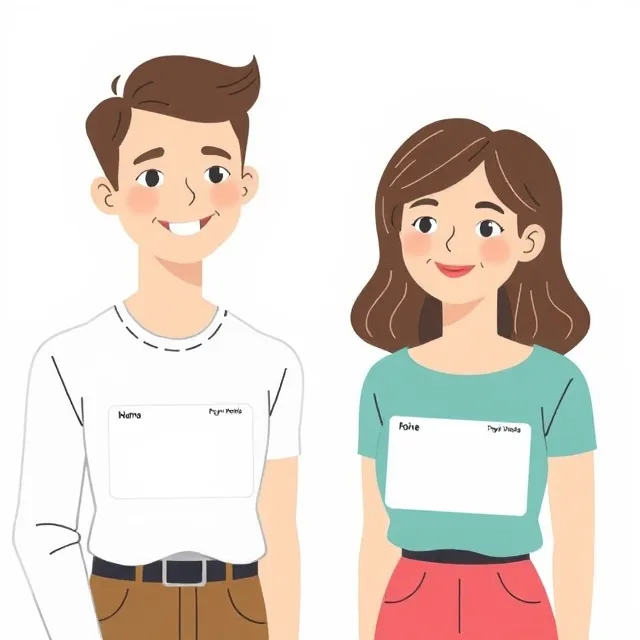
이름 묻고 답하기 — 오늘의 대화 d02-scene.webp 10 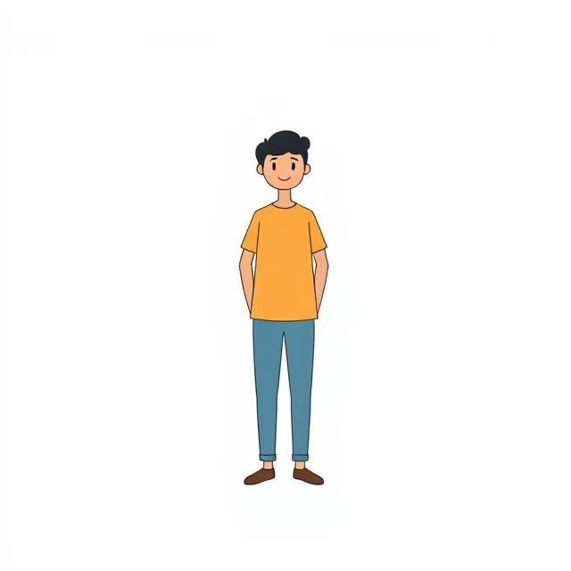
사람 · người d02-nguoi.webp 11 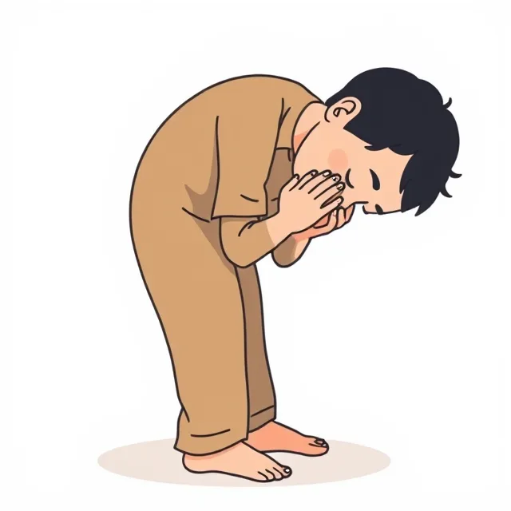
미안합니다·실례합니다 · xin lỗi d02-xin-loi.webp 12 기쁘다 · vui d02-vui.webp Day 3 · 어느 나라, 어디 사세요 7장 13 어느 나라, 어디 사세요 — 오늘의 대화 d03-scene.webp 14 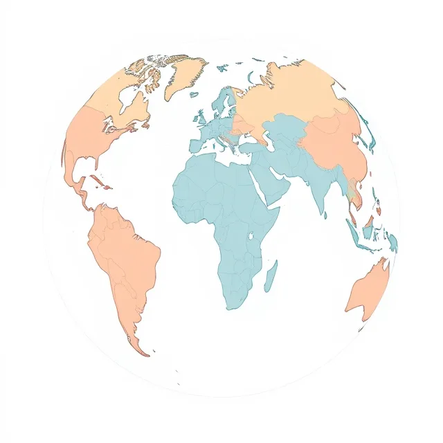
나라·물 · nước d03-nuoc.webp 15 한국 · Hàn Quốc d03-han-quoc.webp 16 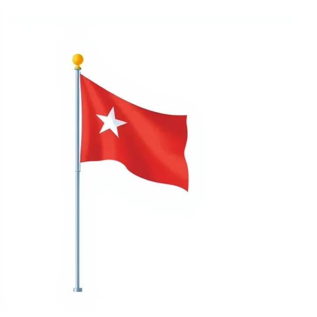
베트남 · Việt Nam d03-viet-nam.webp 17 살다 · sống d03-song.webp 18 여기 · đây d03-day.webp 19 도시 · thành phố d03-thanh-pho.webp Day 4 · 반갑습니다 / 잘 지내세요 5장 Day 5 · 못 알아들었을 때 8장 25 오늘의 대화 — 못 알아들었다고 말하기 d05-scene.webp 🔤 ~. 26 이해하다 · hiểu d05-hieu.webp 27 말하다 · nói d05-noi.webp 28 듣다 · nghe d05-nghe.webp 29 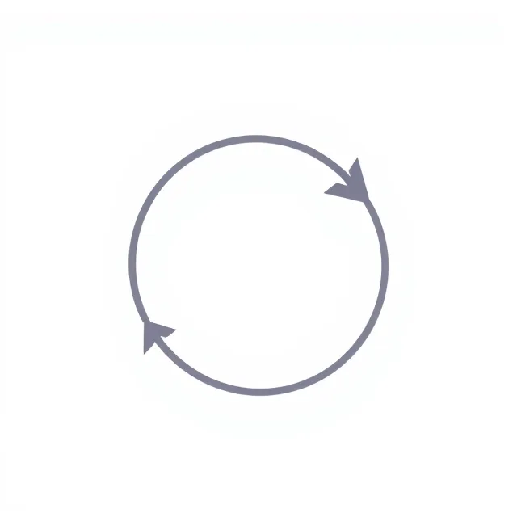
다시 · lại d05-lai.webp 30 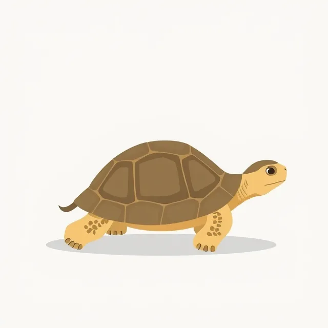
천천히 · từ từ d05-tu-tu.webp 31 베트남어 · tiếng Việt d05-tieng-viet.webp 32 한국어 · tiếng Hàn d05-tieng-han.webp Day 6 · 헤어질 때 6장 33 오늘의 대화 — 헤어지며 인사하기 d06-scene.webp 34 안녕히 가세요 · tạm biệt d06-tam-biet.webp 35 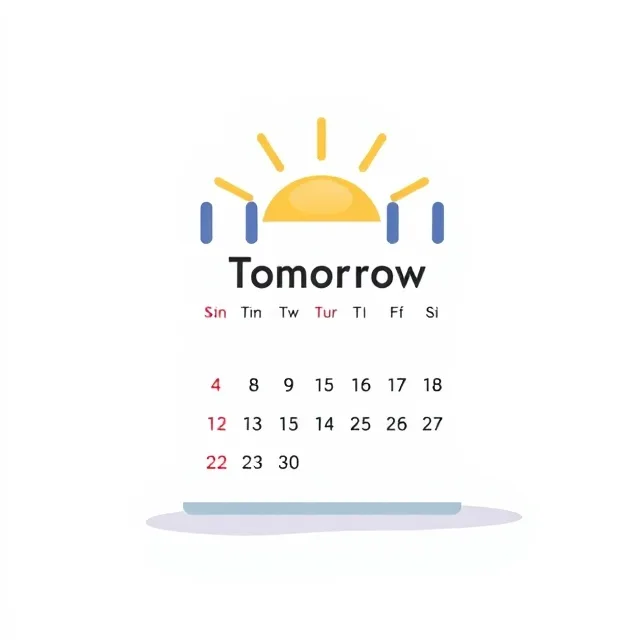
내일 · mai d06-mai.webp 🔤 T2 1 8 15 22 29 T3 2 9 16 23 3 36 가다 · đi d06-di.webp 37 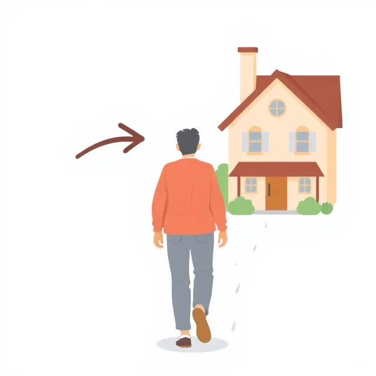
돌아가다 · về d06-ve.webp 38 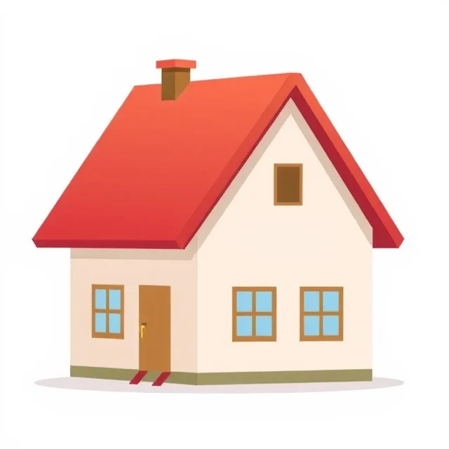
집 · nhà d06-nha.webp 🎯 시험 Day 7 · 숫자 1~10 11장 39 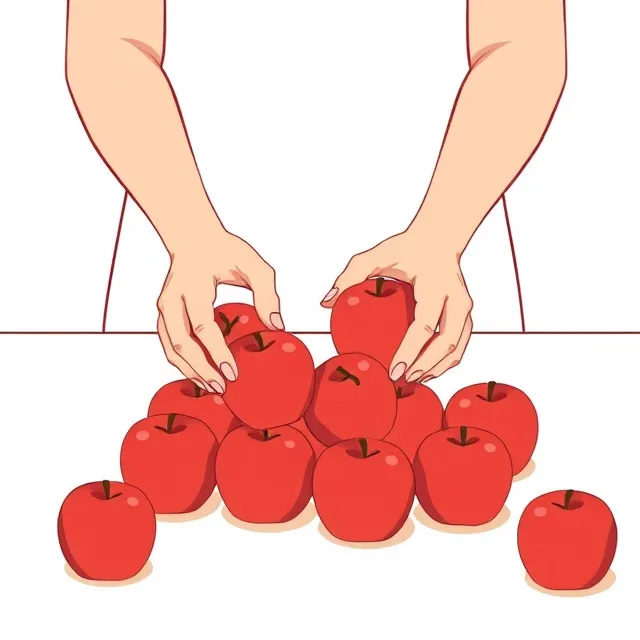
오늘의 대화 — 몇 명인지 묻고 답하기 d07-scene.webp 40 1 · một d07-mot.webp 41 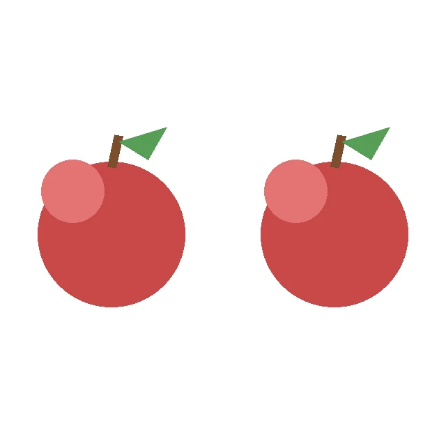
2 · hai d07-hai.webp 42 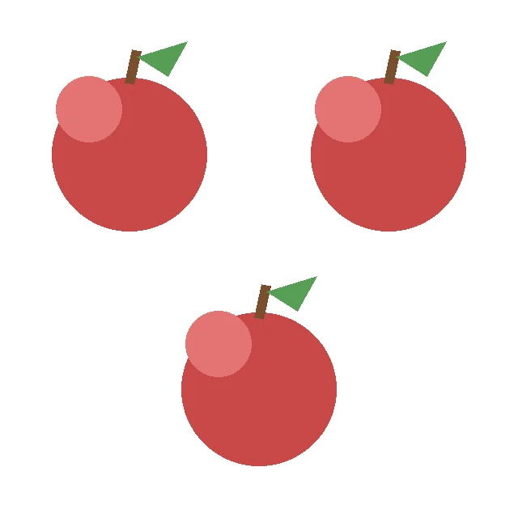
3 · ba d07-ba.webp 43 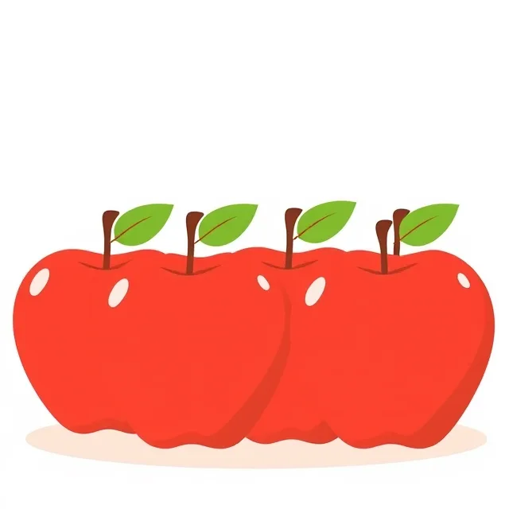
4 · bốn d07-bon.webp 44 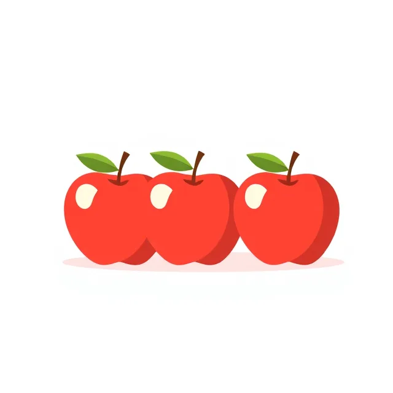
5 · năm d07-nam.webp 45 6 · sáu d07-sau.webp 46 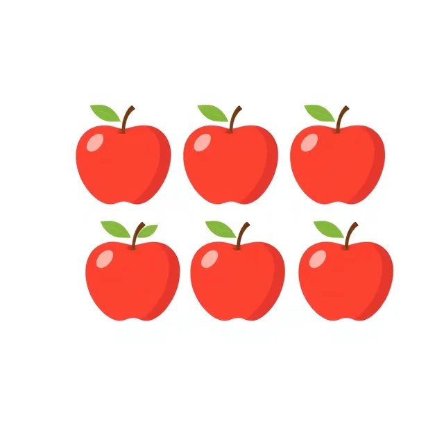
7 · bảy d07-bay.webp 47 8 · tám d07-tam.webp 48 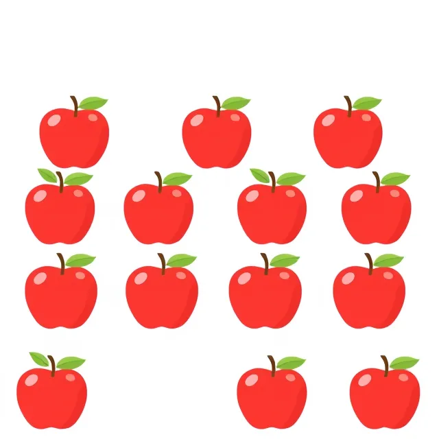
9 · chín d07-chin.webp 49 10 · mười d07-muoi.webp Day 8 · 개수 세기 11장 50 오늘의 대화 — 몇 개인지 묻고 답하기 d08-scene.webp 51 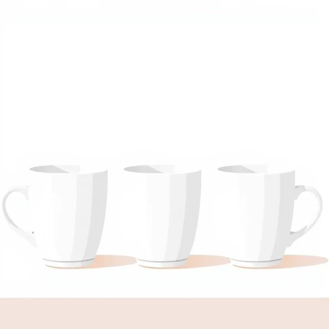
개 (물건 단위) · cái d08-cai.webp 🎯 시험 ♻︎ 교체됨 52 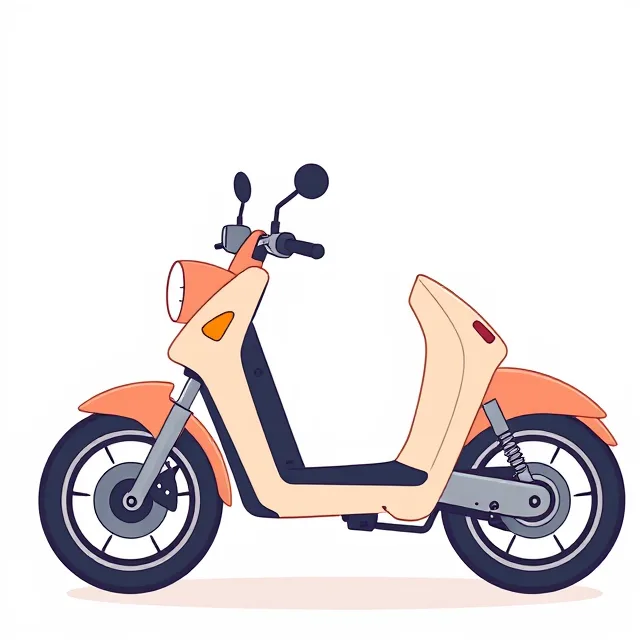
대 (기계 단위) · chiếc d08-chiec.webp 53 마리 (동물 단위) · con d08-con.webp 54 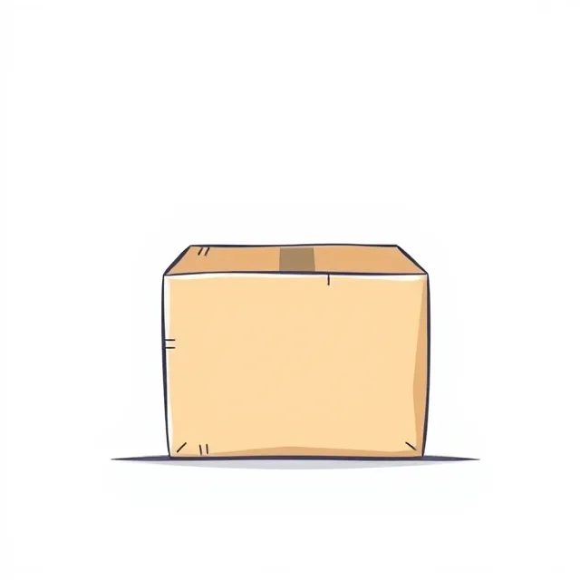
갑·통 · hộp d08-hop.webp 55 상자·박스 · thùng d08-thung.webp 56 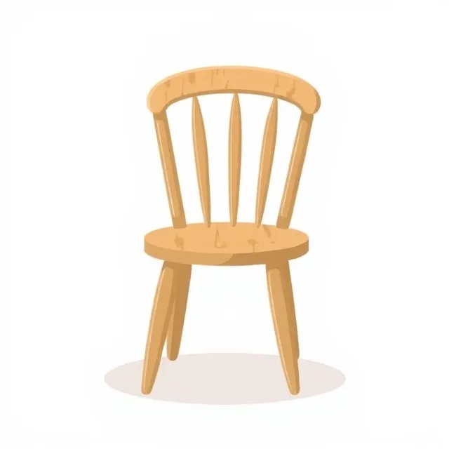
의자 · cái ghế d08-cai-ghe.webp 🎯 시험 57 책 한 권 · quyển sách d08-quyen-sach.webp 58 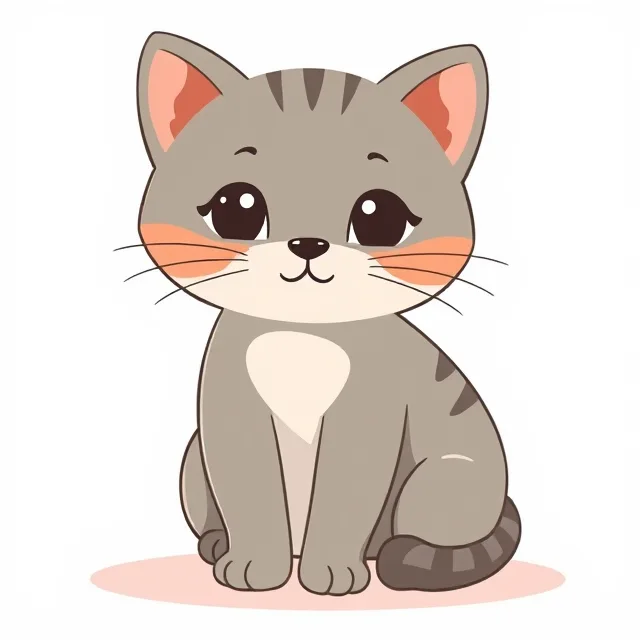
고양이 · con mèo d08-con-meo.webp 🎯 시험 59 개 · con chó d08-con-cho.webp 60 동물 · động vật d08-dong-vat.webp 🔤 wj Day 9 · 나이와 시간 9장 61 오늘의 대화 — 나이와 시간 묻기 d09-scene.webp 🔤 11 12 "10 9 8 7 6 1 2 . 5 62 살·나이 · tuổi d09-tuoi.webp 63 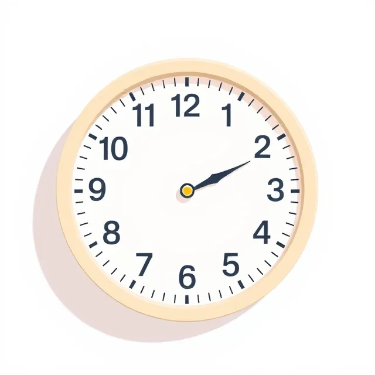
시·시간 · giờ d09-gio.webp 🔤 1111 11 10 9 8 / 7 12 1 6 5 2 64 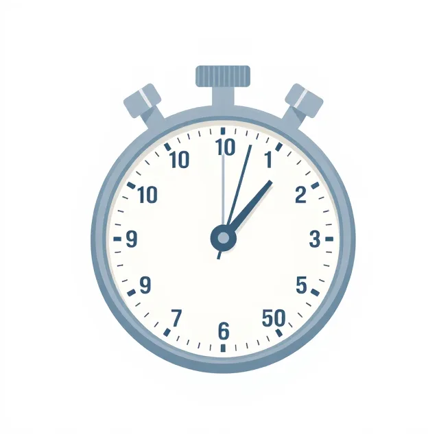
분 · phút d09-phut.webp 🔤 11! -10 9 " 8 12 11 7 5 2 3 3 65 지금 · bây giờ d09-bay-gio.webp 🔤 11 12 1 "10 •9 . 8 2 4 3 - 7 5 66 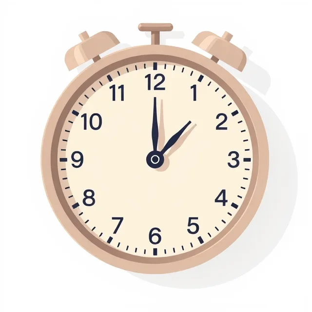
반 (30분) · rưỡi d09-ruoi.webp 🔤 12 11 1 10 9 8 ,7 6 2 ~ 3 4. . 67 아침·오전 · sáng d09-sang.webp 68 오후 · chiều d09-chieu.webp 69 저녁·밤 · tối d09-toi.webp Day 10 · 요일 5장 70 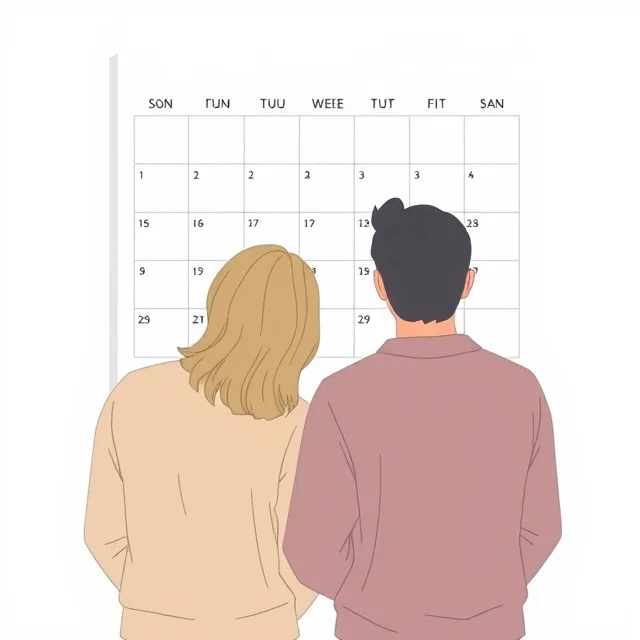
오늘의 대화 — 요일 묻고 답하기 d10-scene.webp ♻︎ 교체됨 🔤 11 2? 20 17 2기 13 ?5 20 14 2) 71 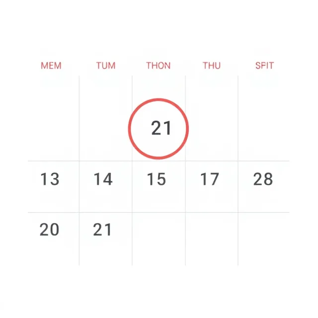
월요일 · thứ hai d10-thu-hai.webp 🔤 T2 T3 15 22 29 2 9 16 23 30 T4 72 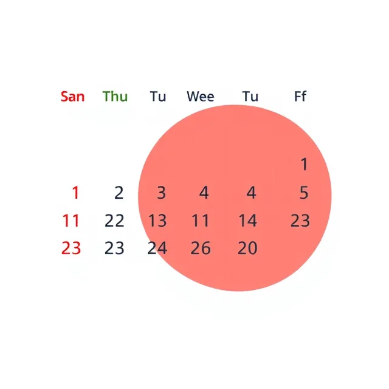
일요일 · chủ nhật d10-chu-nhat.webp 🔤 T2 1 8 15 22 29 T3 2 9 16 23 3 73 어제 · hôm qua d10-hom-qua.webp 🔤 T2 T3 1 8 15 22 29 2 9 1⑥ 23 3 74 주 · tuần d10-tuan.webp 🔤 T2 T3 1 8 15 22 29 2 9 16 23 3 Day 13 · 사고 팔기 8장 94 오늘의 대화 — 값 묻고 흥정하기 d13-scene.webp 95 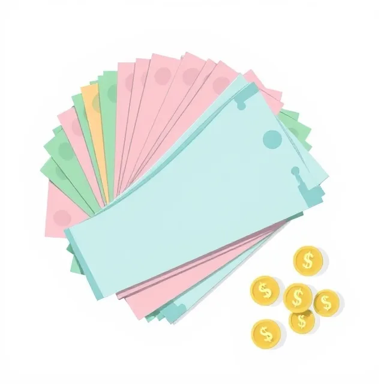
돈 · tiền d13-tien.webp 🎯 시험 96 비싸다 · đắt d13-dat.webp 97 싸다 · rẻ d13-re.webp 98 사다 · mua d13-mua.webp 99 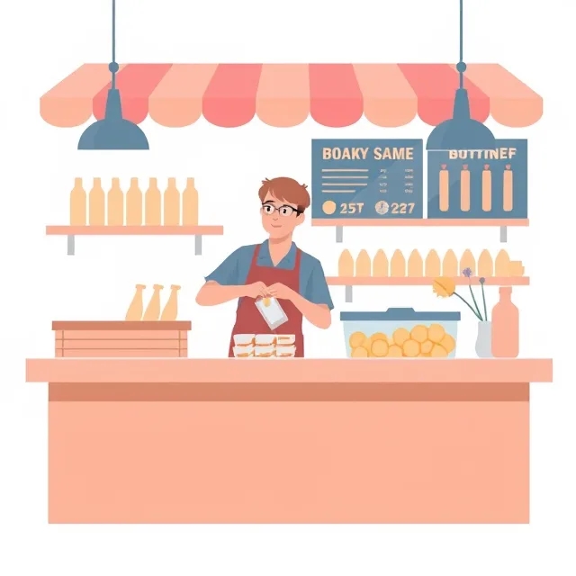
팔다 · bán d13-ban.webp 100 천 (1000) · nghìn d13-nghin.webp 🎯 시험 101 동 (베트남 돈) · đồng d13-dong.webp ♻︎ 교체됨 Day 16 · 아플 때 10장 121 오늘의 대화 — 아프다고 말하기 d16-scene.webp 122 (나쁜 일을) 당하다 · bị d16-bi.webp 123 아프다 · đau d16-dau.webp 124 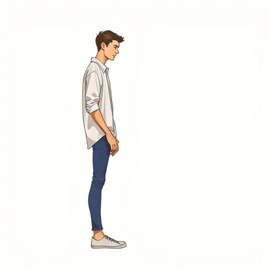
아프다 (병나다) · ốm d16-om.webp 125 병원 · bệnh viện d16-benh-vien.webp 🎯 시험 126 약 · thuốc d16-thuoc.webp 🎯 시험 127 머리 · đầu d16-dau2.webp 128 손 · tay d16-tay.webp 129 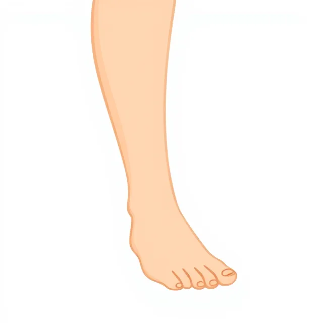
다리·발 · chân d16-chan.webp 130 감기 · cảm d16-cam.webp Day 19 · 했다 / 할 것이다 4장 149 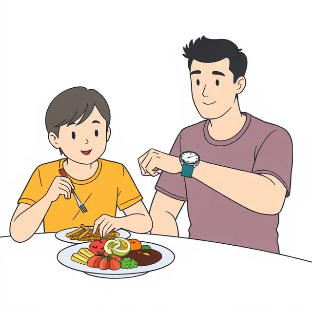
했다 / 할 것이다 — 오늘의 대화 d19-scene.webp 150 아직 (안) · chưa d19-chua.webp 151 다 되다·완료 · xong d19-xong.webp 152 같이·함께 · cùng d19-cung.webp Day 20 · 약속하고 마무리 6장 153 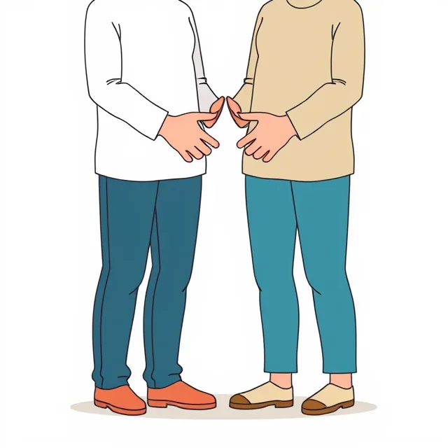
약속하고 마무리 — 오늘의 대화 d20-scene.webp 154 기억하다·그립다 · nhớ d20-nho.webp 155 잊다 · quên d20-quen.webp 156 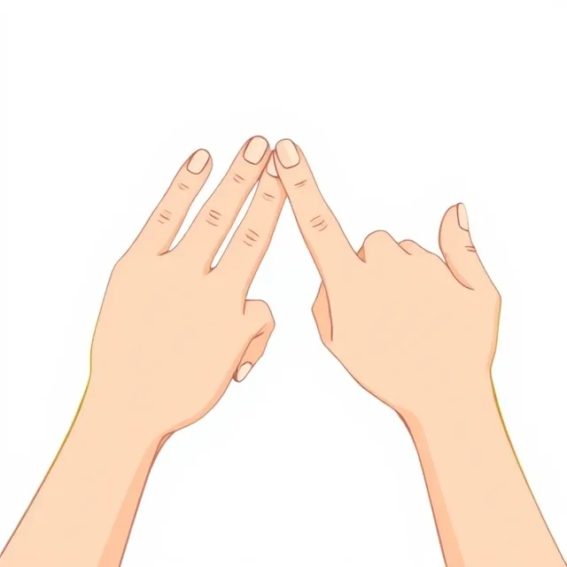
약속하다 · hứa d20-hua.webp 157 확실히 · chắc chắn d20-chac-chan.webp 158 중요하다 · quan trọng d20-quan-trong.webp Day 22 · 재료와 도구 9장 170 재료와 도구 — 오늘의 대화 d22-scene.webp 171 원단·천 · vải d22-vai.webp 172 실 · chỉ d22-chi.webp 🎯 시험 173 바늘 · kim d22-kim.webp 🎯 시험 174 가위 · kéo d22-keo.webp 🎯 시험 175 재봉틀 · máy may d22-may-may.webp 176 단추 · cúc d22-cuc.webp 🎯 시험 177 지퍼 · dây kéo d22-day-keo.webp 178 색깔 · màu d22-mau.webp Day 23 · 옷의 부위 7장 179 오늘의 대화 — 사이즈 확인 d23-scene.webp 180 윗옷 · áo d23-ao.webp 181 바지 · quần d23-quan.webp 🎯 시험 182 소매 · tay áo d23-tay-ao.webp 183 옷깃·칼라 · cổ áo d23-co-ao.webp 184 주머니 · túi d23-tui.webp 🎯 시험 185 솔기·박은 선 · đường may d23-duong-may.webp Day 24 · 동작 — 자르고 박고 8장 186 동작 — 자르고 박고 — 오늘의 대화 d24-scene.webp 187 자르다·재단하다 · cắt d24-cat.webp 188 박다·재봉하다 · may d24-may.webp 189 다림질하다 · ủi d24-ui.webp 190 개다·접다 · gấp d24-gap.webp 191 포장하다 · đóng gói d24-dong-goi.webp 🔤 117 192 달다·붙이다 · đính d24-dinh.webp 193 수놓다·자수하다 · thêu d24-theu.webp Day 25 · 품질과 불량 5장 194 품질과 불량 — 오늘의 대화 d25-scene.webp 195 고장나다·망가지다 · hỏng d25-hong.webp 196 검사하다 · kiểm tra d25-kiem-tra.webp 197 고치다·수선하다 · sửa d25-sua.webp 198 자국·흠 · vết d25-vet.webp
Day 26 · 수량과 납기 3장 199 수량과 납기 — 오늘의 대화 d26-scene.webp 200 물건·물량 · hàng d26-hang.webp 201 넘기다·납품하다 · giao d26-giao.webp Day 27 · 안전 5장 202 오늘의 대화 — 위험 확인 d27-scene.webp 203 사고 · tai nạn d27-tai-nan.webp 204 보호구·보호 · bảo hộ d27-bao-ho.webp 205 장갑 · găng tay d27-gang-tay.webp 🎯 시험 206 마스크 · khẩu trang d27-khau-trang.webp Day 28 · 지시 알아듣기 1장 207 오늘의 대화 — 맞는지 물어보기 d28-scene.webp Day 29 · 기계와 전기 9장 208 기계와 전기 — 오늘의 대화 d29-scene.webp 209 버튼 · nút d29-nut.webp 210 누르다 · bấm d29-bam.webp 211 줄·선 · dây d29-day.webp 212 컨베이어 · băng chuyền d29-bang-chuyen.webp 213 칼 · dao d29-dao.webp 🎯 시험 214 다리미 · bàn ủi d29-ban-ui.webp 215 등·전등 · đèn d29-den.webp 216 공구·도구 · dụng cụ d29-dung-cu.webp Day 30 · 근태와 보고 5장 217 근태와 보고 — 오늘의 대화 d30-scene.webp 218 출근하다 · đi làm d30-di-lam.webp 219 회의하다 · họp d30-hop.webp 220 휴가 내다 · nghỉ phép d30-nghi-phep.webp 221 월급 · lương d30-luong.webp Day 31 · 박음질 세부 6장 222 오늘의 대화 — 땀이 고르지 않을 때 d31-scene.webp 223 땀·스티치 · mũi may d31-mui-may.webp 224 실이 끊기다 · đứt chỉ d31-dut-chi.webp 225 바늘을 갈다 · thay kim d31-thay-kim.webp 226 바늘이 부러지다 · gãy kim d31-gay-kim.webp 🔤 _C- 227 기계 기름 · dầu máy d31-dau-may.webp Day 32 · 재단실 9장 228 오늘의 대화 — 몇 겹 펴는지 묻기 d32-scene.webp 229 원단을 펴다·연단 · trải vải d32-trai-vai.webp 230 패턴·형지 · rập d32-rap.webp 231 초크·분필 · phấn d32-phan.webp 232 자(잣대) · thước d32-thuoc.webp 🎯 시험 233 재다·측정하다 · đo d32-do.webp 234 긋다·그리다 · vẽ d32-ve.webp 235 심지를 붙이다 · ép mex d32-ep-mex.webp 236 재단기 · máy cắt d32-may-cat.webp Day 33 · 부자재 7장 237 오늘의 대화 — 부자재가 떨어졌을 때 d33-scene.webp 238 라벨·상표 · nhãn d33-nhan.webp 239 파이핑·테두리 · viền d33-vien.webp 240 주름·다트 · ly d33-ly.webp 241 버클·잠금 · khóa d33-khoa.webp 242 핀 · ghim d33-ghim.webp 243 고무줄 · chun d33-chun.webp Day 34 · 불량 유형 8장 244 오늘의 대화 — 불량 이름 말하기 d34-scene.webp 245 주름지다·퍼커링 · nhăn d34-nhan.webp 246 비뚤다·어긋나다 · lệch d34-lech.webp 247 찢어지다 · rách d34-rach.webp 248 구멍 나다 · thủng d34-thung.webp 249 얼룩지다·변색되다 · ố d34-o.webp 250 색이 빠지다 · phai d34-phai.webp 251 폐기하다 · hủy d34-huy.webp Day 35 · 세고 적기 8장 252 오늘의 대화 — 세서 기록하기 d35-scene.webp 253 세다 · đếm d35-dem.webp 254 무게를 달다 · cân d35-can.webp 255 기록하다·적다 · ghi d35-ghi.webp 256 카드·사원증 · thẻ d35-the.webp 257 서명하다 · ký d35-ky.webp 258 창고 · kho d35-kho.webp 🎯 시험 259 내보내다·출고하다 · xuất d35-xuat.webp 🔤 0112 Day 36 · 마무리와 포장 8장 260 마무리와 포장 — 오늘의 대화 d36-scene.webp 261 뒤집다 · lộn d36-lon.webp 262 걸다 · treo d36-treo.webp 263 옷걸이·고리 · móc d36-moc.webp 264 테이프 · băng dính d36-bang-dinh.webp 🎯 시험 265 비닐봉지 · túi nilon d36-tui-nilon.webp 🎯 시험 266 상자에 담다 · đóng thùng d36-dong-thung.webp 267 개켜 쌓다·정리하다 · xếp d36-xep.webp Day 37 · 식당과 기숙사 8장 268 식당과 기숙사 — 오늘의 대화 d37-scene.webp 269 구내식당 · nhà ăn d37-nha-an.webp 270 점심밥 · cơm trưa d37-com-trua.webp 271 기숙사 · ký túc xá d37-ky-tuc-xa.webp 🎯 시험 272 유니폼·작업복 · đồng phục d37-dong-phuc.webp 273 신발 · giày d37-giay.webp 🎯 시험 274 슬리퍼 · dép d37-dep.webp 275 엘리베이터 · thang máy d37-thang-may.webp 🎯 시험 Day 38 · 큰 숫자와 월급 4장 276 큰 숫자와 월급 — 오늘의 대화 d38-scene.webp 277 가불하다·선지급 · tạm ứng d38-tam-ung.webp 278 약·쯤 · khoảng d38-khoang.webp 279 은행 · ngân hàng d38-ngan-hang.webp 🎯 시험 ♻︎ 교체됨 Day 39 · 공장 안 길찾기 8장 280 공장 안 길찾기 — 오늘의 대화 d39-scene.webp 281 통로 · lối đi d39-loi-di.webp 🎯 시험 282 문 · cửa d39-cua.webp 🎯 시험 283 계단 · cầu thang d39-cau-thang.webp 🎯 시험 284 오른쪽 · bên phải d39-ben-phai.webp 285 왼쪽 · bên trái d39-ben-trai.webp 286 오르다·올라가다 · lên d39-len.webp 287 내리다·내려가다 · xuống d39-xuong.webp Day 40 · 전화와 연락 6장 288 전화와 연락 — 오늘의 대화 d40-scene.webp 289 전화를 걸다 · gọi điện d40-goi-dien.webp 290 전화를 받다 · nghe máy d40-nghe-may.webp 291 문자 메시지 · tin nhắn d40-tin-nhan.webp 292 잠깐 기다리다 · chờ d40-cho.webp 293 충전하다 · sạc d40-sac.webp Day 41 · 날씨 9장 294 오늘의 대화 — 아침 날씨 인사 d41-scene.webp 295 하늘·날씨 · trời d41-troi.webp 296 비가 오다 · mưa d41-mua.webp 297 햇볕이 나다 · nắng d41-nang.webp 298 덥다 · nóng d41-nong.webp 299 춥다 · lạnh d41-lanh.webp 300 바람 · gió d41-gio.webp 301 구름 · mây d41-may.webp 🎯 시험 302 우산 · ô d41-o.webp 🎯 시험 Day 42 · 타고 다니기 17장 303 오늘의 대화 — 출근 수단 묻기 d42-scene.webp 304 오토바이 · xe máy d42-xe-may.webp 305 버스 · xe buýt d42-xe-buyt.webp 🎯 시험 306 걷다·도보 · đi bộ d42-di-bo.webp 307 길을 건너다 · sang đường d42-sang-duong.webp 308 정류장 · bến d42-ben.webp 🎯 시험 309 표·티켓 · vé d42-ve.webp 🔤 •880m 310 운전하다 · lái xe d42-lai-xe.webp 311 기름·휘발유 · xăng d42-xang.webp 312 길이 막히다 · tắc đường d42-tac-duong.webp 313 직진하다 · đi thẳng d42-di-thang.webp 314 좌회전하다 · rẽ trái d42-re-trai.webp 315 우회전하다 · rẽ phải d42-re-phai.webp 316 속도를 줄이다 · chậm lại d42-cham-lai.webp 317 멈추다·세우다 · dừng lại d42-dung-lai.webp 318 서두르다·빨리 · nhanh lên d42-nhanh-len.webp 319 택시 · xe taxi d42-xe-taxi.webp 🎯 시험 ♻︎ 교체됨 Day 43 · 색깔 8장 320 오늘의 대화 — 원단 색 고르기 d43-scene.webp 321 빨갛다 · đỏ d43-do.webp 322 까맣다 · đen d43-den.webp 323 하얗다 · trắng d43-trang.webp 324 노랗다·금색 · vàng d43-vang.webp 325 분홍이다 · hồng d43-hong.webp 326 갈색이다 · nâu d43-nau.webp 327 보라색이다 · tím d43-tim.webp Day 44 · 마음 말하기 6장 328 오늘의 대화 — 향수병 위로하기 d44-scene.webp 329 슬프다 · buồn d44-buon.webp 330 무섭다 · sợ d44-so.webp 331 화나다 · giận d44-gian.webp 332 웃다 · cười d44-cuoi.webp 333 울다 · khóc d44-khoc.webp Day 45 · 쉬는 날 9장 334 오늘의 대화 — 주말 계획 묻기 d45-scene.webp 335 축구 · bóng đá d45-bong-da.webp 336 영화를 보다 · xem phim d45-xem-phim.webp 337 음악을 듣다 · nghe nhạc d45-nghe-nhac.webp 338 사진을 찍다 · chụp ảnh d45-chup-anh.webp 339 여행하다 · du lịch d45-du-lich.webp 340 수영하다 · bơi d45-boi.webp 341 책을 읽다 · đọc sách d45-doc-sach.webp 342 노래하다 · hát d45-hat.webp Day 46 · 집안일 10장 343 오늘의 대화 — 일요일 집안일 d46-scene.webp 344 빨래하다 · giặt d46-giat.webp 345 요리하다·짓다 · nấu d46-nau.webp 346 씻다·설거지하다 · rửa d46-rua.webp 347 널다·말리다 · phơi d46-phoi.webp 348 쓸다 · quét d46-quet.webp 349 닦다 · lau d46-lau.webp 350 쓰레기 · rác d46-rac.webp 🎯 시험 351 자다 · ngủ d46-ngu.webp 352 샤워하다·목욕하다 · tắm d46-tam.webp Day 47 · 아플 때 더 자세히 10장 353 아플 때 더 자세히 — 오늘의 대화 d47-scene.webp 354 눈 · mắt d47-mat.webp 🎯 시험 355 코 · mũi d47-mui.webp 356 입 · miệng d47-mieng.webp 357 이·치아 · răng d47-rang.webp 358 열나다 · sốt d47-sot.webp 359 기침하다 · ho d47-ho.webp 360 어지럽다 · chóng mặt d47-chong-mat.webp 361 약국 · hiệu thuốc d47-hieu-thuoc.webp 🎯 시험 362 진찰받다 · khám d47-kham.webp Day 48 · 만나서 한잔 7장 363 오늘의 대화 — 저녁 약속 잡기 d48-scene.webp 364 서로 만나다 · gặp nhau d48-gap-nhau.webp 365 가게·식당 · quán d48-quan.webp ♻︎ 교체됨 366 차(마시는) · trà d48-tra.webp 367 맥주 · bia d48-bia.webp 🎯 시험 368 취하다 · say d48-say.webp 369 노래방 · karaoke d48-karaoke.webp 🎯 시험 Day 49 · 축하와 명절 8장 370 오늘의 대화 — 생일 축하하기 d49-scene.webp 371 축하하다 · chúc mừng d49-chuc-mung.webp 372 생일 · sinh nhật d49-sinh-nhat.webp 373 선물 · quà d49-qua.webp 🎯 시험 374 설날·뗏 · Tết d49-tet.webp 375 세뱃돈 · lì xì d49-li-xi.webp 🔤 1등 1등 376 빵·떡 · bánh d49-banh.webp 377 사탕 · kẹo d49-keo.webp 🎯 시험 Day 50 · 베트남에서 살기 5장 378 베트남에서 살기 — 오늘의 대화 d50-scene.webp 379 여권 · hộ chiếu d50-ho-chieu.webp 🎯 시험 380 야시장 · chợ đêm d50-cho-dem.webp 381 밤 · đêm d50-dem.webp 382 오토바이 택시 · xe ôm d50-xe-om.webp Day 51 · 전자 부품 10장 383 오늘의 대화 — 부품 이름 묻기 d51-scene.webp 384 부품 · linh kiện d51-linh-kien.webp 385 화면·디스플레이 · màn hình d51-man-hinh.webp 386 배터리 · pin d51-pin.webp 387 회로 · mạch d51-mach.webp 388 칩 · chip d51-chip.webp 389 전선 · dây điện d51-day-dien.webp 🎯 시험 ♻︎ 교체됨 390 나사 · ốc vít d51-oc-vit.webp 391 접착제·본드 · keo d51-keo.webp 392 유리·렌즈 · kính d51-kinh.webp Day 52 · 조립 동작 10장 393 오늘의 대화 — 조립 후 시운전 d52-scene.webp 394 조립하다 · lắp ráp d52-lap-rap.webp 395 장착하다·붙이다 · gắn d52-gan.webp 396 돌려 조이다 · vặn d52-van.webp 397 꽉 조이다 · siết d52-siet.webp 398 꽂다 · cắm d52-cam.webp 399 뽑다 · rút d52-rut.webp 400 켜다 · bật d52-bat.webp 401 끄다 · tắt d52-tat.webp 402 충전하다·넣다 · nạp d52-nap.webp Day 53 · 클린룸과 정전기 8장 403 클린룸과 정전기 — 오늘의 대화 d53-scene.webp 404 먼지 · bụi d53-bui.webp 405 클린룸 · phòng sạch d53-phong-sach.webp 406 정전기 밴드·팔찌 · vòng tay d53-vong-tay.webp 407 모자·캡 · mũ d53-mu.webp 408 불다(에어) · thổi d53-thoi.webp 409 빨아들이다·흡입하다 · hút d53-hut.webp 410 들어가다 · vào d53-vao.webp Day 54 · {'ko': '먼저 하고 그다음', 'vi': 'Xong rồi mới'} 4장 411 데이터에 낱말 없음 d54-camera.webp 🗂 안 쓰임 412 데이터에 낱말 없음 d54-hinh.webp 🗂 안 쓰임 413 데이터에 낱말 없음 d54-phong-to.webp 🗂 안 쓰임 414 데이터에 낱말 없음 d54-soi.webp 🗂 안 쓰임 🔤 0D Day 55 · 라인 돌리기 5장 415 오늘의 대화 — 라인이 섰을 때 d55-scene.webp 416 생산 라인(전체) · dây chuyền d55-day-chuyen.webp 417 멈추다 · ngừng d55-ngung.webp 🔤 STOP 418 돌다·가동하다 · chạy d55-chay.webp 419 교대를 바꾸다 · đổi ca d55-doi-ca.webp Day 56 · 사무실 9장 420 오늘의 대화 — 자료 주고받기 d56-scene.webp 421 컴퓨터 · máy tính d56-may-tinh.webp 🎯 시험 422 이메일 · email d56-email.webp 423 인쇄하다 · in d56-in.webp 424 종이 · giấy d56-giay.webp 🎯 시험 425 펜 · bút d56-but.webp 426 서류철·기록 · hồ sơ d56-ho-so.webp 427 일정·달력 · lịch d56-lich.webp 🔤 T2 T3 1 8 15 22 29 2 9 16 23 3 428 회의 · cuộc họp d56-cuoc-hop.webp Day 57 · 손님 응대 10장 429 오늘의 대화 — 주문과 계산 d57-scene.webp 430 고객 · khách hàng d57-khach-hang.webp ♻︎ 교체됨 431 응대하다·서비스 · phục vụ d57-phuc-vu.webp 432 메뉴판 · thực đơn d57-thuc-don.webp 433 포장하다·싸다 · gói d57-goi.webp 434 가져가다·포장 판매 · mang về d57-mang-ve.webp 🔤 SHOP 435 계산하다 · tính tiền d57-tinh-tien.webp 436 현금 · tiền mặt d57-tien-mat.webp 437 할인하다 · giảm giá d57-giam-gia.webp 438 영수증 · hóa đơn d57-hoa-don.webp Day 58 · {'ko': '예전에 그랬던', 'vi': 'Từng như thế'} 1장 439 데이터에 낱말 없음 d58-scene.webp 🗂 안 쓰임 Day 59 · 일정과 출장 5장 440 일정과 출장 — 오늘의 대화 d59-scene.webp 441 공항 · sân bay d59-san-bay.webp 🎯 시험 442 비행기 · máy bay d59-may-bay.webp 🎯 시험 443 호텔 · khách sạn d59-khach-san.webp 🎯 시험 ♻︎ 교체됨 444 서류 · giấy tờ d59-giay-to.webp 🎯 시험 Day 60 · 은행과 서류 7장 445 은행과 서류 — 오늘의 대화 d60-scene.webp 446 송금하다 · chuyển tiền d60-chuyen-tien.webp 447 출금하다 · rút tiền d60-rut-tien.webp 448 환전하다 · đổi tiền d60-doi-tien.webp ♻︎ 교체됨 449 비밀번호 · mật khẩu d60-mat-khau.webp 450 기입하다·적어 넣다 · điền d60-dien.webp 451 제출하다·내다 · nộp d60-nop.webp Day 61 · 복장과 태도 5장 452 복장과 태도 — 오늘의 대화 d61-scene.webp 🔤 RULES 453 입다 · mặc d61-mac.webp 454 차다·착용하다 · đeo d61-deo.webp 455 게으르다 · lười d61-luoi.webp 456 버리다 · vứt d61-vut.webp Day 62 · 동료와 지내기 5장 457 동료와 지내기 — 오늘의 대화 d62-scene.webp 458 도와주다 · giúp đỡ d62-giup-do.webp 459 나누다·공유하다 · chia sẻ d62-chia-se.webp 460 칭찬하다 · khen d62-khen.webp 461 다투다 · cãi nhau d62-cai-nhau.webp Day 63 · 회식 6장 462 오늘의 대화 — 회식 자리에서 d63-scene.webp 463 회식·파티 · liên hoan d63-lien-hoan.webp 464 따르다 · rót d63-rot.webp 465 잔을 비우다·건배 · cạn ly d63-can-ly.webp 466 (음식을) 집다·집어 주다 · gắp d63-gap.webp 467 거절하다 · từ chối d63-tu-choi.webp Day 64 · 휴가와 근태 심화 4장 468 휴가와 근태 심화 — 오늘의 대화 d64-scene.webp 469 병가를 내다 · nghỉ ốm d64-nghi-om.webp 470 조퇴하다 · về sớm d64-ve-som.webp 471 공지하다·알리다 · thông báo d64-thong-bao.webp Day 65 · 실수했을 때 1장 472 실수했을 때 — 오늘의 대화 d65-scene.webp Day 66 · 근로계약 2장 473 오늘의 대화 — 계약서 읽기 d66-scene.webp 474 계약(서) · hợp đồng d66-hop-dong.webp Day 67 · 급여명세 읽기 7장 475 급여명세 읽기 — 오늘의 대화 d67-scene.webp 476 급여명세서 · bảng lương d67-bang-luong.webp 🔤 PAYSLIP 477 추가 근무하다 · làm thêm d67-lam-them.webp 478 곱하다 · nhân d67-nhan.webp 479 나누다 · chia d67-chia.webp 480 계좌 이체하다 · chuyển khoản d67-chuyen-khoan.webp 481 통장·장부 · sổ d67-so.webp ♻︎ 교체됨 Day 68 · 비자와 체류 7장 482 비자와 체류 — 오늘의 대화 d68-scene.webp ♻︎ 교체됨 483 허가증 · giấy phép d68-giay-phep.webp 🔤 1001 2000 484 임시거주증 · thẻ tạm trú d68-the-tam-tru.webp 485 대사관 · đại sứ quán d68-dai-su-quan.webp 🎯 시험 486 기입하다·신고하다 · khai d68-khai.webp 487 사진 · ảnh d68-anh.webp 🎯 시험 488 사본 · bản sao d68-ban-sao.webp Day 69 · 건강검진과 응급 8장 489 건강검진과 응급 — 오늘의 대화 d69-scene.webp 490 건강검진 · khám sức khỏe d69-kham-suc-khoe.webp 491 처방전 · đơn thuốc d69-don-thuoc.webp ♻︎ 교체됨 🔤 vle- 492 구급차 · xe cấp cứu d69-xe-cap-cuu.webp 493 눕다 · nằm d69-nam.webp 494 입원하다 · nằm viện d69-nam-vien.webp 495 퇴원하다 · xuất viện d69-xuat-vien.webp 🔤 HOSPITAL 496 피로하다 · mệt mỏi d69-met-moi.webp Day 70 · 잃어버렸을 때 8장 497 잃어버렸을 때 — 오늘의 대화 d70-scene.webp 498 잃어버리다 · mất d70-mat.webp 499 찾다 · tìm d70-tim.webp 500 떨어뜨리다 · rơi d70-roi.webp 501 도둑·도난 · trộm d70-trom.webp 502 경찰(공안) · công an d70-cong-an.webp 503 지갑 · ví d70-vi.webp 🎯 시험 504 전화기·휴대폰 · điện thoại d70-dien-thoai.webp Day 71 · 고향과 나이 5장 505 고향과 나이 — 오늘의 대화 d71-scene.webp 506 고향 · quê d71-que.webp 507 결혼하다 · kết hôn d71-ket-hon.webp 508 애인 · người yêu d71-nguoi-yeu.webp 509 자녀가 있다 · có con d71-co-con.webp Day 72 · {'ko': '따지고 보면', 'vi': 'Coi như là'} 6장 510 데이터에 낱말 없음 d72-cao.webp 🗂 안 쓰임 511 데이터에 낱말 없음 d72-cho.webp 🗂 안 쓰임 512 데이터에 낱말 없음 d72-meo.webp 🗂 안 쓰임 513 데이터에 낱말 없음 d72-nuoi.webp 🗂 안 쓰임 514 데이터에 낱말 없음 d72-scene.webp 🗂 안 쓰임 515 데이터에 낱말 없음 d72-thap.webp 🗂 안 쓰임 Day 73 · 축구 이야기 8장 516 오늘의 대화 — 어제 경기 봤어요? d73-scene.webp 517 팀 · đội d73-doi.webp 518 이기다 · thắng d73-thang.webp 519 지다 · thua d73-thua.webp 520 선수 · cầu thủ d73-cau-thu.webp 521 (공을) 차다 · đá d73-da.webp 522 응원하다 · cổ vũ d73-co-vu.webp 523 우승하다 · vô địch d73-vo-dich.webp Day 74 · 주말 이야기 7장 524 오늘의 대화 — 주말에 뭐 했어요 d74-scene.webp 525 고향에 다녀오다 · về quê d74-ve-que.webp 526 혼자 · một mình d74-mot-minh.webp 527 친구들 · bạn bè d74-ban-be.webp 528 데이트하다 · hẹn hò d74-hen-ho.webp 529 푹 쉬다 · nghỉ ngơi d74-nghi-ngoi.webp 530 산책하다 · đi dạo d74-di-dao.webp Day 75 · 맞장구와 리액션 2장 531 맞장구와 리액션 — 오늘의 대화 d75-scene.webp 532 박수 치다 · vỗ tay d75-vo-tay.webp
Day 76 · 카페 13장 533 오늘의 대화 — 커피 주문 d76-scene.webp 534 우유·연유 · sữa d76-sua.webp ♻︎ 교체됨 535 연유커피 · cà phê sữa d76-ca-phe-sua.webp 536 아이스커피 · cà phê đá d76-ca-phe-da.webp 537 얼음차 (무료로 주는) · trà đá d76-tra-da.webp 538 생과일 셰이크 · sinh tố d76-sinh-to.webp 539 사탕수수 주스 · nước mía d76-nuoc-mia.webp 540 빨대 · ống hút d76-ong-hut.webp 541 잔·컵 · cốc d76-coc.webp 🔤 (()] 542 생우유 · sữa tươi d76-sua-tuoi.webp 543 술 · rượu d76-ruou.webp 544 과일 주스 · nước hoa quả d76-nuoc-hoa-qua.webp 545 아이스크림 · kem d76-kem.webp 🎯 시험 Day 77 · 쌀국수 주문 심화 13장 546 젓가락 한 벌 · đôi đũa d77-doi-dua.webp 547 숟가락 · cái thìa d77-cai-thia.webp 🎯 시험 548 쌀국수 주문 심화 — 오늘의 대화 d77-scene.webp 549 그릇·사발 · bát d77-bat.webp 550 소고기 · bò d77-bo.webp 551 닭고기 · gà d77-ga.webp 🎯 시험 552 야채 · rau d77-rau.webp 553 라임 · chanh d77-chanh.webp 554 고추 · ớt d77-ot.webp 🎯 시험 555 파 · hành d77-hanh.webp 556 육수 · nước dùng d77-nuoc-dung.webp 557 바게트 샌드위치 · bánh mì d77-banh-mi.webp 558 볶음면 · mỳ xào d77-my-xao.webp Day 78 · 유심과 휴대폰 5장 559 유심과 휴대폰 — 오늘의 대화 d78-scene.webp 560 유심 · sim d78-sim.webp 561 와이파이 · wifi d78-wifi.webp 562 통화 · cuộc gọi d78-cuoc-goi.webp 563 코드를 찍다(QR) · quét mã d78-quet-ma.webp Day 79 8장 564 데이터에 낱말 없음 d79-chat.webp 🗂 안 쓰임 565 데이터에 낱말 없음 d79-dai.webp 🗂 안 쓰임 566 데이터에 낱말 없음 d79-ngan.webp 🗂 안 쓰임 567 데이터에 낱말 없음 d79-rong.webp 🗂 안 쓰임 568 데이터에 낱말 없음 d79-scene.webp 🗂 안 쓰임 569 데이터에 낱말 없음 d79-tho.webp 🗂 안 쓰임 570 데이터에 낱말 없음 d79-tiem-giat.webp 🗂 안 쓰임 571 데이터에 낱말 없음 d79-va.webp 🗂 안 쓰임 Day 80 · 택배와 그랩 7장 572 오늘의 대화 — 배달 주소 알려주기 d80-scene.webp 573 배달 · ship d80-ship.webp 574 앱 · app d80-app.webp 575 골목 · ngõ d80-ngo.webp 🎯 시험 576 차를 부르다(그랩) · đặt xe d80-dat-xe.webp 🔤 TAXI 577 물건을 부치다 · gửi hàng d80-gui-hang.webp 🔤 RB 578 배달하다 · giao hàng d80-giao-hang.webp Day 81 · 지시하기 2장 579 오늘의 대화 — 순서대로 지시하기 d81-scene.webp 🔤 ⑦ ③ 580 따라 하다 · làm theo d81-lam-theo.webp
Day 82 · 진행 확인 1장 581 오늘의 대화 — 진행 확인하기 d82-scene.webp
Day 83 · 지적은 따로, 부드럽게 4장 582 지적은 따로, 부드럽게 — 오늘의 대화 d83-scene.webp 583 따로 말하다 · nói riêng d83-noi-rieng.webp 584 피하다 · tránh d83-tranh.webp 585 창피하다 · xấu hổ d83-xau-ho.webp Day 84 · 칭찬과 격려 4장 586 오늘의 대화 — 팀 앞에서 칭찬하기 d84-scene.webp 587 격려하다 · động viên d84-dong-vien.webp 588 조·팀 · nhóm d84-nhom.webp 589 미소 · nụ cười d84-nu-cuoi.webp Day 85 · 회의 진행 6장 590 오늘의 대화 — 조회 진행하기 d85-scene.webp 591 발언하다 · phát biểu d85-phat-bieu.webp 592 반대하다 · phản đối d85-phan-doi.webp 593 기록하다·메모하다 · ghi chép d85-ghi-chep.webp 594 서기·비서 · thư ký d85-thu-ky.webp 595 표결하다 · biểu quyết d85-bieu-quyet.webp
Day 86 3장 596 데이터에 낱말 없음 d86-ban-thanh-pham.webp 🗂 안 쓰임 597 데이터에 낱말 없음 d86-scene.webp 🗂 안 쓰임 598 데이터에 낱말 없음 d86-thanh-pham.webp 🗂 안 쓰임 Day 87 3장 599 데이터에 낱말 없음 d87-bang-mau.webp 🗂 안 쓰임 600 데이터에 낱말 없음 d87-doi-xung.webp 🗂 안 쓰임 601 데이터에 낱말 없음 d87-khop.webp 🗂 안 쓰임 Day 88 · 검사 합불 6장 602 오늘의 대화 — 합불 나누기 d88-scene.webp 603 분류하다 · phân loại d88-phan-loai.webp 604 합격품 · hàng đạt d88-hang-dat.webp 605 불량품 · hàng lỗi d88-hang-loi.webp 606 표시하다 · đánh dấu d88-danh-dau.webp 607 스티커·태그 · tem d88-tem.webp Day 89 · 수선 라인 8장 608 수선 라인 — 오늘의 대화 d89-scene.webp 609 나가다·밖으로 · ra d89-ra.webp 610 뜯어내다 · tháo ra d89-thao-ra.webp 611 교체하다 · thay thế d89-thay-the.webp 🔤 e) 612 지우다·얼룩 빼다 · tẩy d89-tay.webp 613 긁히다 · xước d89-xuoc.webp 🔤 111/ 614 구멍 · lỗ d89-lo.webp 615 실땀·실자국 · đường chỉ d89-duong-chi.webp Day 90 · 작업 표준서 읽기 3장 616 작업 표준서 읽기 — 오늘의 대화 d90-scene.webp 617 도면 · bản vẽ d90-ban-ve.webp 🔤 8m 618 기호 · ký hiệu d90-ky-hieu.webp 🔤 •FABRIC CARE-
Day 91 · 납땜 8장 619 오늘의 대화 — 납땜 지시 d91-scene.webp 620 납땜하다 · hàn d91-han.webp 621 납땜부·땜점 · mối hàn d91-moi-han.webp 🔤 06g 622 땜납·주석 · thiếc d91-thiec.webp 🔤 I! 623 인두 · mỏ hàn d91-mo-han.webp 624 연기 · khói d91-khoi.webp 625 회로 기판 · bo mạch d91-bo-mach.webp 626 집게·클립 · kẹp d91-kep.webp Day 92 · 장비 다루기 4장 627 장비 다루기 — 오늘의 대화 d92-scene.webp 🔤 1• 628 전원 · nguồn d92-nguon.webp 629 켜다·기동하다 · khởi động d92-khoi-dong.webp 630 연결하다 · kết nối d92-ket-noi.webp Day 93 · 불량 증상 말하기 7장 631 불량 증상 말하기 — 오늘의 대화 d93-scene.webp ♻︎ 교체됨 🔤 PEROR. 632 금 가다 · nứt d93-nut.webp 633 깨지다 · vỡ d93-vo.webp 634 타다 · cháy d93-chay.webp 635 합선되다 · chập d93-chap.webp 636 새다 · rò d93-ro.webp 637 떨리다·진동하다 · rung d93-rung.webp Day 94 · 온도·습도·접지 7장 638 온도·습도·접지 — 오늘의 대화 d94-scene.webp ♻︎ 교체됨 639 잇다·연결하다 · nối d94-noi.webp 640 온도 · nhiệt độ d94-nhiet-do.webp 641 선풍기·팬 · quạt d94-quat.webp 642 거르다·필터링하다 · lọc d94-loc.webp 643 필터 · màng lọc d94-mang-loc.webp 644 미세먼지 · bụi mịn d94-bui-min.webp Day 95 · 출하 전 검수 6장 645 출하 전 검수 — 오늘의 대화 d95-scene.webp 646 팔레트 · pallet d95-pallet.webp 647 봉인하다 · niêm phong d95-niem-phong.webp 648 무게 · cân nặng d95-can-nang.webp 649 목록·리스트 · danh sách d95-danh-sach.webp 650 수령 서명하다 · ký nhận d95-ky-nhan.webp Day 96 · 지게차와 안전거리 8장 651 지게차와 안전거리 — 오늘의 대화 d96-scene.webp 🔤 .( 652 지게차 · xe nâng d96-xe-nang.webp 653 들어올리다 · nâng d96-nang.webp 654 내리다 · hạ d96-ha.webp 655 후진하다 · lùi d96-lui.webp 656 서다 · đứng d96-dung.webp 657 무겁다 · nặng d96-nang2.webp 658 가볍다 · nhẹ d96-nhe.webp Day 97 · 입고와 출고 7장 659 입고와 출고 — 오늘의 대화 d97-scene.webp 🔤 .: 660 입고하다 · nhập kho d97-nhap-kho.webp 661 출고하다 · xuất kho d97-xuat-kho.webp 662 선반·랙 · kệ d97-ke.webp 663 정리해 배치하다 · sắp xếp d97-sap-xep.webp 664 비다 · trống d97-trong.webp 665 가득 차다 · đầy d97-day.webp Day 98 4장 666 데이터에 낱말 없음 d98-cat.webp 🗂 안 쓰임 667 데이터에 낱말 없음 d98-kiem-ke.webp 🗂 안 쓰임 🔤 :: 668 데이터에 낱말 없음 d98-lan.webp 🗂 안 쓰임 669 데이터에 낱말 없음 d98-scene.webp 🗂 안 쓰임 Day 99 9장 670 데이터에 낱말 없음 d99-boc.webp 🗂 안 쓰임 671 데이터에 낱말 없음 d99-boc2.webp 🗂 안 쓰임 672 데이터에 낱말 없음 d99-buoc.webp 🗂 안 쓰임 673 데이터에 낱말 없음 d99-cau.webp 🗂 안 쓰임 674 데이터에 낱말 없음 d99-che.webp 🗂 안 쓰임 675 데이터에 낱말 없음 d99-container.webp 🗂 안 쓰임 676 데이터에 낱말 없음 d99-do.webp 🗂 안 쓰임 677 데이터에 낱말 없음 d99-scene.webp 🗂 안 쓰임 678 데이터에 낱말 없음 d99-xe-tai.webp 🗂 안 쓰임 Day 100 · 인수인계와 클레임 6장 679 인수인계와 클레임 — 오늘의 대화 d100-scene.webp 680 인수인계·배송 수령 · giao nhận d100-giao-nhan.webp 681 수령인 · người nhận d100-nguoi-nhan.webp 682 발송인 · người gửi d100-nguoi-gui.webp 683 파손되다 · hư hỏng d100-hu-hong.webp 684 찍어 두다 · chụp lại d100-chup-lai.webp Day 101 · 무슨 일 하세요 11장 685 오늘의 대화 — 무슨 일 하세요? d101-scene.webp 686 직업·기술 · nghề d101-nghe.webp 687 회사 · công ty d101-cong-ty.webp 688 공장 · nhà máy d101-nha-may.webp 🎯 시험 689 노동자·직공 · công nhân d101-cong-nhan.webp 690 직원 · nhân viên d101-nhan-vien.webp 🔤 000 691 사무실 · văn phòng d101-van-phong.webp 692 배우다·공부하다 · học d101-hoc.webp 693 고되다·힘들다 · vất vả d101-vat-va.webp 694 뽑다·채용하다 · tuyển d101-tuyen.webp 🔤 JOBS ‡ 695 센터·학원 (trung tâm) d101-trung-tam.webp ♻︎ 교체됨 🗂 안 쓰임 Day 102 · 숫자와 돈 계산 11장 696 숫자와 돈 계산 — 오늘의 대화 d102-scene.webp 697 백 (100) · trăm d102-tram.webp 698 열 (10개 묶음) · chục d102-chuc.webp 699 백만 · triệu d102-trieu.webp 700 가격 · giá d102-gia.webp 701 계산하다 · tính d102-tinh.webp 702 더하다 · cộng d102-cong.webp 703 빼다 · trừ d102-tru.webp 704 같다 (=) · bằng d102-bang.webp 705 잔돈 · tiền lẻ d102-tien-le.webp ♻︎ 교체됨 706 거스름돈 · tiền thừa d102-tien-thua.webp Day 104 · 과일 9장 707 오늘의 대화 — 과일 가게에서 d104-scene.webp 708 바나나 · chuối d104-chuoi.webp 🎯 시험 709 망고 · xoài d104-xoai.webp 710 파인애플 · dứa d104-dua.webp 711 코코넛 · dừa d104-dua2.webp 712 사과 · táo d104-tao.webp 🎯 시험 713 수박 · dưa hấu d104-dua-hau.webp 🎯 시험 714 딸기 · dâu tây d104-dau-tay.webp 🎯 시험 715 복숭아 · đào d104-dao.webp 🎯 시험 Day 106 · 장보기 10장 716 오늘의 대화 — 시장에서 d106-scene.webp 717 돼지(고기) · lợn d106-lon.webp 🎯 시험 718 달걀 · trứng d106-trung.webp 🎯 시험 719 모닝글로리(공심채) · rau muống d106-rau-muong.webp 720 마늘 · tỏi d106-toi.webp 🎯 시험 721 감자 · khoai tây d106-khoai-tay.webp 🎯 시험 722 오이 · dưa chuột d106-dua-chuot.webp 🎯 시험 723 당근 · cà rốt d106-ca-rot.webp 🎯 시험 724 토마토 · cà chua d106-ca-chua.webp 🎯 시험 725 피망·파프리카 · ớt tây d106-ot-tay.webp 뉴스에서 뽑은 낱말 106장 726 돌아오다 · về n-ve.webp 🔤 TOCCE 727 비행기 · máy bay n-may-bay.webp 728 사다 · mua n-mua.webp 729 가다 · đi n-di.webp 730 집 · nhà n-nha.webp 731 가격 · giá n-gia.webp 732 싸다 · rẻ n-re.webp 733 차/오토바이 · xe n-xe.webp 734 길 · đường n-duong.webp 735 경찰 · cảnh sát n-canh-sat.webp 736 운전하다 · lái xe n-lai-xe.webp 737 빠르다 · nhanh n-nhanh.webp 738 안전 · an toàn n-an-toan.webp 739 물건 · hàng n-hang.webp 740 손님 · khách n-khach.webp 741 멈추다 · dừng n-dung.webp 742 법 · luật n-luat.webp 743 좋다 · tốt n-tot.webp 744 진짜 · thật n-that.webp 745 틀리다 · sai n-sai.webp 746 팔다 · bán n-ban.webp 747 돈 · tiền n-tien.webp 🔤 20 $ $ 748 잘못 · lỗi n-loi.webp 749 물 · nước n-nuoc.webp 750 수출하다 · xuất khẩu n-xuat-khau.webp 751 수입하다 · nhập khẩu n-nhap-khau.webp 752 닭 · gà n-ga.webp 🔤 TRATION STATION 753 고기 · thịt n-thit.webp 754 생산하다 · sản xuất n-san-xuat.webp 🔤 .. 755 새로운 · mới n-moi.webp 756 첫 번째 · đầu tiên n-dau-tien.webp 757 회사 · công ty n-cong-ty.webp 758 시장 · thị trường n-thi-truong.webp 759 기계 · máy n-may.webp 🔤 15 760 일하다 · làm n-lam.webp 761 많다 · nhiều n-nhieu.webp 762 공장 · xưởng n-xuong.webp 763 전기 · điện n-dien.webp 764 잘하다 · giỏi n-gioi.webp 765 일 · việc n-viec.webp 766 종이/서류 · giấy n-giay.webp 767 벌금 · phạt n-phat.webp 768 주인/사장 · chủ n-chu.webp 769 사람 · người n-nguoi.webp 770 필요하다 · cần n-can.webp 771 도착하다 · đến n-den.webp 772 쉬다 · nghỉ n-nghi.webp 773 오늘 · nay n-nay.webp 🔤 TENDAY| 1017 774 먹다 · ăn n-an.webp 775 비싸다 · đắt n-dat.webp 776 건강하다 · khỏe n-khoe.webp 777 적다 · ít n-it.webp 🔤 3 5 2 2 778 공사 · công n-cong.webp 779 가게 · cửa hàng n-cua-hang.webp 🔤 CONPERJENCE TArEET 780 사진 · ảnh n-anh.webp 781 계약 · hợp đồng n-hop-dong.webp 🔤 CORTRANT 782 문제 · vấn đề n-van-de.webp 🔤 ! WARNING 783 광고 · quảng cáo n-quang-cao.webp 784 보다 · xem n-xem.webp 785 은행 · ngân hàng n-ngan-hang.webp 🔤 BANK 786 년 · năm n-nam.webp 🔤 Wecd Sol Ta we Tueday Sei Tue 787 월 · tháng n-thang.webp 🔤 SHTFWTI FE 1 11 14 21 2 12 13 788 증가하다 · tăng n-tang.webp 789 감소하다 · giảm n-giam.webp 790 일하다 · làm việc n-lam-viec.webp 791 외국 · nước ngoài n-nuoc-ngoai.webp 792 귀국하다 · về nước n-ve-nuoc.webp 793 시간 · thời gian n-thoi-gian.webp 🔤 9 8 12 2 3 4. 7 5 9 794 끝나다 · kết thúc n-ket-thuc.webp 🔤 STOP 795 규정 · quy định n-quy-dinh.webp 796 정부 · chính phủ n-chinh-phu.webp 🔤 171 797 법 · pháp n-phap.webp 798 통과하다 · qua n-qua.webp 799 검사하다 · kiểm n-kiem.webp 800 일찍 · sớm n-som.webp 🔤 ㅜ .. 11 12 . 10 9 8 1 7 6 2 3: 801 높은 · cao n-cao.webp 802 낮은 · thấp n-thap.webp 803 오래된 · cũ n-cu.webp 🔤 11 ^11 10 1 "1 2 ~ 9 8 4 7 6 " 804 버스 · xe buýt n-xe-buyt.webp 805 도시철도 · tàu điện n-tau-dien.webp 806 무료 · miễn phí n-mien-phi.webp 🔤 FREE FREE 807 이동하다 · đi lại n-di-lai.webp 808 공휴일 · ngày lễ n-ngay-le.webp 🔤 1 1 1 1 23 24538 33 2 3 7 809 시간 · giờ n-gio.webp 🔤 12 11 / •. ~ 10 -9 6 / ~ 3- ㅣㅣ 810 도시 · thành phố n-thanh-pho.webp 811 병원 · bệnh viện n-benh-vien.webp 812 의사 · bác sĩ n-bac-si.webp 813 약 · thuốc n-thuoc.webp 814 아프다 · đau n-dau.webp 815 진찰하다 · khám n-kham.webp 816 치아 · răng n-rang.webp 817 예쁘다 · đẹp n-dep.webp 818 여행 · du lịch n-du-lich.webp 819 세금 · thuế n-thue.webp 820 지원 · hỗ trợ n-ho-tro.webp 821 옷 · áo n-ao.webp 822 약속 · hẹn n-hen.webp 823 가게/식당 · quán n-quan.webp 824 밥 · cơm n-com.webp 825 쌀국수 · phở n-pho.webp 826 맛있다 · ngon n-ngon.webp 827 채소 · rau n-rau.webp 828 차 · chè n-che.webp 829 가는 면 · bún n-bun.webp 830 바다 · biển n-bien.webp 831 많다 · đông n-dong.webp 낱말장 — 여러 날에 걸쳐 쓰는 말 445장 832 안녕하세요 (정중) · xin chào x-xin-chao.webp 833 나·저 · tôi x-toi.webp 834 네 · vâng x-vaang.webp 835 이름 · tên x-ten.webp 836 무엇 · gì x-gi.webp 837 아니다 / ~입니까? · không x-khong.webp 838 있다 · có x-cos.webp 839 매우 · rất x-rat.webp 840 어느 · nào x-nao.webp 841 ~에 (있다) · ở x-o.webp 842 어디 · đâu x-ddaau.webp 843 저기 · kia x-kia.webp 844 그리고 · và x-va.webp 845 ~하게 되다·할 수 있다 · được x-duoc.webp 846 어떻다·어때 · thế nào x-the-nao.webp 🔤 ? ? 847 아주 (말 끝에) · lắm x-lam.webp 848 ~도·또한 · cũng x-cung.webp 849 보통이다 · bình thường x-binh-thuong.webp 850 알다 · biết x-biet.webp 851 느리다·천천히 · chậm x-cham.webp 852 조금 · một chút x-mot-chut.webp 853 또 만나요 · hẹn gặp lại x-hen-gap-lai.webp 854 ~후에·뒤 · sau x-sau.webp 855 ~전에·앞 · trước x-truoc.webp 856 이미·했다 · rồi x-roi.webp 🔤 11 12 1 10~ 8 7 6 5 2 4 857 몇 (적은 수) · mấy x-maays.webp 🔤 ?? 858 얼마나·몇 (큰 수) · bao nhiêu x-bao-nhieu.webp 🔤 15 859 전부·모두 · tất cả x-tat-ca.webp 860 남다·아직 있다 · còn x-con.webp 861 부족하다 · thiếu x-thieu.webp 862 책상·탁자 · cái bàn x-cai-ban.webp 863 이쑤시개 · tăm x-tawm.webp 864 십 (20·30의 십) · mươi x-muoi.webp 865 ~에 (시각) · lúc x-luc.webp 🔤 9 10 8 12 6 2 4 3 866 화요일 · thứ ba x-thu-ba.webp 🔤 T2 1 8 15 22 29 T3 2 9 16 23 3 867 수요일 · thứ tư x-thu-tu.webp 🔤 T2 1 15 22 29 T3 2 9 16 23 30 868 목요일 · thứ năm x-thu-nam.webp 🔤 T2 1 15 22 29 T3 2 9 16 23 30 869 금요일 · thứ sáu x-thu-sau.webp 🔤 T2 1 15 22 29 T3 2 9 16 23 30 870 토요일 · thứ bảy x-thu-bay.webp 🔤 T2 1 8 15 22 29 T3 2 9 16 23 3 871 날·일 · ngày x-ngayf.webp 872 이미 ~했다 · đã x-da.webp 873 ~하는 중 · đang x-ddang.webp 874 ~할 것이다 · sẽ x-se.webp 875 ~와 함께 · với x-voi.webp 876 그저께 · hôm kia x-hom-kia.webp 🔤 T2 1 15 22 29 T3 2 9 16 23 30 877 언제 · bao giờ x-bao-gio.webp 878 왜·어떻게 · sao x-sao.webp 879 일하다 · làm việc x-lam-viec.webp 880 일찍·이르다 · sớm x-som.webp 881 매·각각 · mỗi x-moaix.webp 🔤 ~ ~ 882 보통·자주 · thường x-thuwowngf.webp 883 부디·좀 (부탁) · làm ơn x-lam-on.webp 884 필요하다 · cần x-can.webp 885 ~해 주실 수 있나요 · được không x-duoc-khong.webp 886 ~하세요 (지시) · hãy x-hay.webp 887 약속하다·잡다 · hẹn x-hen.webp 🔤 17 2 2 8 888 누구 · ai x-ai.webp 🔤 ~. 889 또 뭐 · gì nữa x-gi-nua.webp 🔤 +? 890 그만·~만 · thôi x-thoi.webp 891 더 · nữa x-nua.webp 892 놀다 · chơi x-choi.webp 893 운동·스포츠 · thể thao x-the-thao.webp 894 새해 · năm mới x-nam-moi.webp 🔤 T2 1 8 15 22 29 T3 2 9 16 23 3 895 행복하다 · hạnh phúc x-hanh-phuc.webp 896 건강 · sức khỏe x-suc-khoe.webp 897 배 · bụng x-bung.webp 898 목구멍 · họng x-hong.webp 899 이·이것 · này x-nay.webp 900 ~에게 주다 · cho x-cho.webp 901 청하다·주세요 · xin x-xin.webp 902 생산 라인 · chuyền x-chuyen.webp 903 근무조·교대 · ca x-ca.webp 904 잔업하다 · tăng ca x-tang-ca.webp 905 수량 · số lượng x-so-luong.webp 906 총·합계 · tổng x-tong.webp 🔤 7 4 1 5|26.50 8 5 0 + 907 받다 · nhận x-nhan.webp 908 보내다 · gửi x-gui.webp 🔤 •. 909 다 떨어지다 · hết x-het.webp 910 충분하다 · đủ x-du.webp 911 더·추가로 · thêm x-them.webp 912 제때 되다 · kịp x-kip.webp 913 안전 · an toàn x-an-toan.webp 914 위험하다 · nguy hiểm x-nguy-hiem.webp 915 조심하다 · cẩn thận x-can-than.webp 916 금지하다 · cấm x-cam.webp 917 주의하다 · chú ý x-chu-y.webp 918 빠르다·빨리 · nhanh x-nhanh.webp 919 맞다 · đúng x-dung.webp 920 틀리다 · sai x-sai.webp 921 같다 · giống x-giong.webp 922 다르다 · khác x-khac.webp 923 보다 · xem x-xem.webp 924 자리·부분 · chỗ x-choax.webp 925 이렇게 · thế này x-the-nay.webp 926 이것 · cái này x-cai-nay.webp 927 저것 · cái kia x-cai-kia.webp 928 기계 · máy x-mays.webp 🎯 시험 929 전기 · điện x-dien.webp 930 보고하다 · báo cáo x-bao-cao.webp 931 도착하다 · đến x-ddeans.webp 932 양해를 구하다 · xin phép x-xin-phep.webp 933 제시간에 · đúng giờ x-dung-gio.webp 🔤 12 11 !! 1 "10 -9 -8 7 3- 6 4. 934 결근하다·자리 비우다 · vắng x-vawngs.webp 935 열심히 하다 · cố gắng x-co-gang.webp 936 표·판 · bảng x-bang.webp 937 번호·숫자 · số x-so.webp 938 전표·주문서 · đơn x-ddown.webp 939 점심 휴식 · nghỉ trưa x-nghi-trua.webp 940 방 · phòng x-phong.webp 941 층 · tầng x-taangf.webp 942 달·월 · tháng x-thangs.webp 943 상여금·보너스 · thưởng x-thuwowngr.webp 944 오르다·늘다 · tăng x-tawng.webp 945 줄다·내리다 · giảm x-giam.webp 946 퍼센트 · phần trăm x-phan-tram.webp 947 보험 · bảo hiểm x-bao-hiem.webp 948 세금 · thuế x-thueas.webp 949 구역 · khu x-khu.webp 950 곧장·똑바로 · thẳng x-thawngr.webp 951 되돌아가다 · quay lại x-quay-lai.webp 🔤 K) 952 전화번호 · số điện thoại x-so-dien-thoai.webp 🔤 < 6 0 6 L 953 여보세요 · alô x-alo.webp 954 바쁘다 · bận x-baanj.webp 955 한가하다 · rảnh x-ranh.webp 956 연락하다 · liên lạc x-lien-lac.webp 957 단춧구멍 · khuy x-khuy.webp 958 샘플·견본 · mẫu x-mau.webp 959 밑단 · gấu x-gau.webp 960 앞판 · thân trước x-than-truoc.webp 961 뒷판 · thân sau x-than-sau.webp 962 사이즈·치수 · cỡ x-cowx.webp 963 오버록 치다 · vắt sổ x-vat-so.webp 964 뜯다·풀다 · tháo x-thao.webp 965 실밥 따다 · nhặt chỉ x-nhat-chi.webp 966 불량·오류 · lỗi x-loi.webp 967 품질 · chất lượng x-chat-luong.webp 968 제품 · sản phẩm x-san-pham.webp 969 합격이다 · đạt x-ddatj.webp 970 다시 하다 · làm lại x-lam-lai.webp 🔤 redo 971 더럽다·얼룩지다 · bẩn x-baanr.webp 972 되박음질하다 · lại mũi x-lai-mui.webp 973 땀이 빠지다·스킵 · bỏ mũi x-bo-mui.webp 974 실 장력 · căng chỉ x-cang-chi.webp 🔤 • • 975 조정하다 · chỉnh x-chinh.webp 🔤 • .' _. 976 고르다·균일하다 · đều x-deu.webp 977 재단대 · bàn cắt x-ban-cat.webp 978 겹·층 · lớp x-lop.webp 979 안감 · lót x-lot.webp 980 심지 · mex x-mex.webp 🔤 ----- 981 바택 · bọ x-boj.webp 982 부자재 · phụ liệu x-phu-lieu.webp 983 누락되다·빠뜨리다 · sót x-sot.webp 984 바꾸다 · đổi x-doi.webp 985 등급·종류 · loại x-loai.webp 986 완성하다 · hoàn thành x-hoan-thanh.webp 🔤 _K 987 붙이다 · dán x-dan.webp 988 깨끗하다 · sạch x-sach.webp 989 파랗다·푸르다 · xanh x-xanh.webp 990 진하다 · đậm x-dam.webp 991 연하다 · nhạt x-nhat.webp 992 걱정하다 · lo x-lo.webp 993 지루하다·질리다 · chán x-chan.webp 994 편안하다 · thoải mái x-thoai-mai.webp 995 긴장되다·스트레스 · căng thẳng x-cang-thang.webp 996 집이 그립다 · nhớ nhà x-nho-nha.webp 997 잘한다·유능하다 · giỏi x-gioi.webp 998 훌륭하다 · tuyệt vời x-tuyet-voi.webp 999 솜씨 좋다 · khéo x-kheo.webp 1000 서툴다·못하다 · dở x-dowr.webp 1001 엄청·대단히 · ghê x-ghe.webp 1002 익숙하다·아는 사이다 · quen x-quen.webp 1003 두부 · đậu phụ x-dau-phu.webp 🎯 시험 1004 망고스틴 · măng cụt x-mang-cut.webp 1005 함께·다 같이 · cùng nhau x-cung-nhau.webp 1006 초대하다·권하다 · mời x-mowif.webp 1007 손님 · khách x-khach.webp 1008 즐겁다 · vui vẻ x-vui-ve.webp 1009 달다 · ngọt x-ngot.webp 1010 쓰다 · đắng x-ddawngs.webp 1011 설익힌·레어 · tái x-tai.webp 1012 향긋하다 · thơm x-thom.webp 1013 볶음밥 · cơm rang x-com-rang.webp 1014 분짜(석쇠구이 국수) · bún chả x-bun-cha.webp 1015 튀김 스프링롤 · nem rán x-nem-ran.webp 1016 요거트 · sữa chua x-sua-chua.webp 1017 차·탈것 · xe x-xe.webp 1018 주소 · địa chỉ x-dia-chi.webp 1019 번지·집 번호 · số nhà x-so-nha.webp 🔤 819 1523 1020 곳·장소 · nơi x-noi.webp 1021 도착하다 · đến nơi x-den-noi.webp 1022 센서 · cảm biến x-cam-bien.webp 1023 시운전하다 · chạy thử x-chay-thu.webp 1024 정전기 · tĩnh điện x-tinh-dien.webp 1025 마르다·건조하다 · khô x-kho.webp 1026 습하다 · ẩm x-am.webp 1027 속도 · tốc độ x-toc-do.webp 🔤 0 5 8 20 1028 목표 · mục tiêu x-muc-tieu.webp 1029 생산량 · sản lượng x-san-luong.webp 1030 계속하다 · tiếp tục x-tiep-tuc.webp 1031 계획 · kế hoạch x-ke-hoach.webp ♻︎ 교체됨 1032 알리다 · báo x-bao.webp 1033 자료 · tài liệu x-tai-lieu.webp 1034 글자 · chữ x-chu.webp 1035 주문하다·예약하다 · đặt x-ddawtj.webp 1036 출장 · công tác x-cong-tac.webp 1037 방을 예약하다 · đặt phòng x-dat-phong.webp 🔤 T2 T3 1 15 22 29 2 9 16 23 30 1038 연기되다·미뤄지다 · hoãn x-hoan.webp 1039 ~보다 더 · hơn x-hon.webp 1040 계좌 · tài khoản x-tai-khoan.webp 1041 환율 · tỷ giá x-ty-gia.webp 1042 수수료 · phí x-phi.webp 1043 등록하다·신청하다 · đăng ký x-dang-ky.webp 1044 성실하다·부지런하다 · chăm chỉ x-cham-chi.webp 1045 사규·규정 · nội quy x-noi-quy.webp 1046 지키다·유지하다 · giữ x-giu.webp 1047 단정하다·정돈되다 · gọn gàng x-gon-gang.webp 1048 태도 · thái độ x-thai-do.webp 1049 진지하다·엄정하다 · nghiêm túc x-nghiem-tuc.webp 🔤 (- 1050 부탁하다 · nhờ x-nho.webp 🔤 •2: 1051 존중하다 · tôn trọng x-ton-trong.webp 1052 안부를 묻다 · hỏi thăm x-hoi-tham.webp 1053 흉보다·깎아내리다 · chê x-che.webp 1054 농담하다 · đùa x-dua.webp 1055 친하다 · thân x-than.webp 1056 기원하다·빌다 · chúc x-chuc.webp 1057 강요하다 · ép x-ep.webp 1058 2차 · tăng hai x-tang-hai.webp 1059 끼니·식사 자리 · bữa x-bua.webp 1060 너무·정말 · quá x-qua.webp 1061 휴가를 신청하다 · xin nghỉ x-xin-nghi.webp 🔤 000 1062 연차 · phép năm x-phep-nam.webp 1063 이유 · lý do x-ly-do.webp 1064 급한 일 · việc gấp x-viec-gap.webp 1065 일정을 바꾸다 · đổi lịch x-doi-lich.webp 1066 곧 ~하려 하다 · sắp x-sap.webp 🔤 FINISH 1067 일깨우다·챙겨 말하다 · nhắc x-nhac.webp 1068 착각하다·잘못 알다 · nhầm x-nham.webp 1069 그만 ~해 버리다 · lỡ x-lowx.webp 1070 고의로 · cố ý x-co-y.webp 1071 실수로·무심코 · vô ý x-vo-y.webp 1072 용서하다 · tha lỗi x-tha-loi.webp 1073 번·회 · lần x-lan.webp 1074 잘못을 바로잡다 · sửa sai x-sua-sai.webp 1075 경험 · kinh nghiệm x-kinh-nghiem.webp 1076 넘어가 주다 · bỏ qua x-bo-qua.webp 1077 정말로·진심으로 · thật x-that.webp 1078 수습 · thử việc x-thu-viec.webp 1079 정식의 · chính thức x-chinh-thuc.webp 1080 기본급 · lương cơ bản x-luong-co-ban.webp 1081 기한 · thời hạn x-thoi-han.webp 1082 연장하다 · gia hạn x-gia-han.webp 1083 조항 · điều khoản x-dieu-khoan.webp 1084 권리·복리 · quyền lợi x-quyen-loi.webp 1085 의무 · nghĩa vụ x-nghia-vu.webp 1086 꼼꼼히·신중히 · kỹ x-ky.webp 1087 수당 · phụ cấp x-phu-cap.webp 1088 근무 일수 · ngày công x-ngay-cong.webp 🔤 T2 T3 T4 T5T6 T CN 1 8 15 22 2 1089 총합·합계 · tổng cộng x-tong-cong.webp 1090 의문·궁금한 점 · thắc mắc x-thac-mac.webp 1091 노동 · lao động x-lao-dong.webp 1092 영사관 · lãnh sự quán x-lanh-su-quan.webp 1093 기한 · hạn x-han.webp 1094 기한이 지나다 · quá hạn x-qua-han.webp 1095 의료 · y tế x-y-te.webp 1096 응급 · cấp cứu x-cap-cuu.webp 1097 (병이) 낫다 · khỏi x-khoi.webp 1098 발견하다·보이다 · thấy x-thay.webp 1099 분실 신고하다 · báo mất x-bao-mat.webp 1100 침착하다 · bình tĩnh x-binh-tinh.webp 1101 치우다·정리하다 · dọn x-donj.webp 1102 외국 · nước ngoài x-nuoc-ngoai.webp 1103 비자 · visa x-visa.webp 1104 빌리다·세내다 · thuê x-thuea.webp 1105 문화 · văn hóa x-van-hoa.webp 1106 습관 · thói quen x-thoi-quen.webp 1107 힘내라 · cố lên x-co-len.webp 1108 통신망·인터넷 · mạng x-mang.webp 1109 요금 · cước x-cuoc.webp 1110 요금제 · gói cước x-goi-cuoc.webp 🔤 S5 1111 (요금을) 충전하다 · nạp tiền x-nap-tien.webp 1112 무료 · miễn phí x-mien-phi.webp 🔤 0X$ 1113 코드·번호 · mã x-ma.webp 1114 형·오빠 · anh trai x-anh-trai.webp 1115 누나·언니 · chị gái x-chi-gai.webp 1116 남동생 · em trai x-em-trai.webp 1117 성(지방 행정구역) · tỉnh x-tinh.webp 1118 지방·권역 · miền x-mien.webp 1119 북부 · miền Bắc x-mien-bac.webp 1120 남부 · miền Nam x-mien-nam.webp 1121 ~년생 · sinh năm x-sinh-nam.webp 1122 미혼이다 · độc thân x-doc-than.webp 1123 계절·철 · mùa x-mua.webp 1124 젖다 · ướt x-uot.webp 1125 끝·마지막 · cuối x-cuoi.webp 1126 주말 · cuối tuần x-cuoi-tuan.webp 🔤 T2 1 8 15 22 29 T3 2 9 16 23 3 1127 이야기해 주다 · kể x-ke.webp 1128 놀러 가다 · đi chơi x-di-choi.webp 1129 경기·판 · trận x-tran.webp 1130 비기다 · hòa x-hoa.webp 1131 스코어·점수 · tỷ số x-ty-so.webp 1132 해 보다·시험 삼아 · thử x-thu.webp 1133 우선·먼저 · trước hết x-truoc-het.webp 🔤 1 3 3 1134 그것·그 · đó x-ddos.webp 1135 그다음에 · sau đó x-sau-do.webp 1136 하나씩·각각 · từng x-tung.webp 1137 따르다·~대로 · theo x-theo.webp 1138 방법 · cách x-cach.webp 1139 올바른 방법으로 · đúng cách x-dung-cach.webp 1140 분명하게 · rõ ràng x-ro-rang.webp 1141 진도·진행 · tiến độ x-tien-do.webp 1142 오래 걸리다 · lâu x-lau.webp 1143 얼마나 오래 · bao lâu x-bao-lau.webp 1144 남은 것 · còn lại x-con-lai.webp 1145 문제 · vấn đề x-van-de.webp 1146 해결하다 · giải quyết x-giai-quyet.webp 1147 즉시·바로 · ngay x-ngay.webp 1148 즉시 보고하다 · báo ngay x-bao-ngay.webp 1149 괜찮다·안정되다 · ổn x-on.webp 1150 일단·임시로 · tạm x-tamj.webp 1151 의견을 주다·피드백하다 · góp ý x-gop-y.webp 1152 부드럽게 · nhẹ nhàng x-nhe-nhang.webp 1153 따로·개인적으로 · riêng x-rieng.webp 1154 면전에서·앞에서 · trước mặt x-truoc-mat.webp 1155 체면을 잃다 · mất mặt x-mat-mat.webp 1156 뜻·의도 · ý x-y.webp 1157 뜻을 알아듣다 · hiểu ý x-hieu-y.webp 1158 신뢰하다 · tin tưởng x-tin-tuong.webp 1159 자랑스럽다 · tự hào x-tu-hao.webp 1160 발전하다·늘다 · tiến bộ x-tien-bo.webp 1161 뛰어나다 · xuất sắc x-xuat-sac.webp 1162 팀 전체 · cả nhóm x-ca-nhom.webp 1163 발휘하다 · phát huy x-phat-huy.webp 1164 순서·프로그램 · chương trình x-chuong-trinh.webp 🔤 _1. 1165 의견 · ý kiến x-y-kien.webp 1166 동의하다 · đồng ý x-dong-y.webp 1167 결정하다 · quyết định x-quyet-dinh.webp 🔤 1m W 1168 결론 · kết luận x-ket-luan.webp 1169 경적 · còi x-coi.webp 1170 멀리 피하다 · tránh xa x-tranh-xa.webp 1171 구역 · khu vực x-khu-vuc.webp 1172 들이다·입력하다 · nhập x-nhap.webp 1173 전표·표 · phiếu x-phieu.webp 1174 재고 · tồn kho x-ton-kho.webp 1175 위치 · vị trí x-vi-tri.webp 1176 확인서·조서 · biên bản x-bien-ban.webp 1177 약속대로·제때 · đúng hẹn x-dung-hen.webp 1178 망가지다 · hư x-hu.webp 1179 배상하다 · đền x-ddeanf.webp 1180 클레임을 걸다 · khiếu nại x-khieu-nai.webp 1181 기준·표준 · tiêu chuẩn x-tieu-chuan.webp 1182 분리하다 · tách x-tach.webp 1183 따로 빼다 · tách riêng x-tach-rieng.webp 1184 표시·부호 · dấu x-daaus.webp 1185 마지막으로·최종 · lần cuối x-lan-cuoi.webp 1186 원래대로·그대로 · nguyên x-nguyen.webp 1187 그대로 두다 · giữ nguyên x-giu-nguyen.webp 1188 새것처럼 · như mới x-nhu-moi.webp 1189 지침·안내 · hướng dẫn x-huong-dan.webp 1190 주석·설명 달기 · chú thích x-chu-thich.webp 1191 페이지·쪽 · trang x-trang.webp 1192 줄·행 · dòng x-dong.webp 1193 항목 · mục x-muc.webp 1194 알아보다 · tìm hiểu x-tim-hieu.webp 1195 업데이트하다 · cập nhật x-cap-nhat.webp 1196 버전·판 · phiên bản x-phien-ban.webp 1197 녹아 흐르다 · chảy x-chay.webp 1198 녹다 · nóng chảy x-nong-chay.webp 1199 기판(보드) · bo x-bo.webp 🔤 !!!! 1200 표시되다·뜨다 · hiển thị x-hien-thi.webp 1201 소프트웨어 · phần mềm x-phan-mem.webp 1202 부드럽다 · mềm x-mem.webp 1203 설치하다·설정하다 · cài đặt x-cai-dat.webp 1204 데이터 · dữ liệu x-du-lieu.webp 1205 저장하다 · lưu x-luu.webp 1206 다시 켜다·재부팅 · khởi động lại x-khoi-dong-lai.webp 1207 불량 코드 · mã lỗi x-ma-loi.webp 1208 점·점수 · điểm x-diem.webp 🔤 1:45 1209 틈이 벌어지다 · hở x-ho.webp 1210 소리가 나다 · kêu x-keu.webp 1211 접지하다 · nối đất x-noi-dat.webp 1212 열 · nhiệt x-nhiet.webp 🔤 -60 -45 -40 -40 -10 1213 습도 · độ ẩm x-do-am.webp 1214 절연하다 · cách điện x-cach-dien.webp 1215 짝·건 (포장 단위) · kiện x-kien.webp 1216 대조하다 · đối chiếu x-doi-chieu.webp 1217 막다·방지하다 · chống x-chong.webp 1218 방습하다 · chống ẩm x-chong-am.webp 1219 수량이 맞다 · đủ số x-du-so.webp ♻︎ 교체됨 1220 데이터에 낱말 없음 x-ban.webp 🗂 안 쓰임 1221 데이터에 낱말 없음 x-cau.webp 🗂 안 쓰임 1222 데이터에 낱말 없음 x-chenh-lech.webp 🗂 안 쓰임 1223 데이터에 낱말 없음 x-chinh-xac.webp 🗂 안 쓰임 1224 데이터에 낱말 없음 x-chua.webp 🗂 안 쓰임 1225 데이터에 낱말 없음 x-chuan.webp 🗂 안 쓰임 🔤 2 3 4 5 1226 데이터에 낱말 없음 x-chuyen-sang.webp 🗂 안 쓰임 1227 데이터에 낱말 없음 x-co.webp 🗂 안 쓰임 1228 데이터에 낱말 없음 x-cong-doan.webp 🗂 안 쓰임 1229 데이터에 낱말 없음 x-cuoi-cung.webp 🗂 안 쓰임 1230 데이터에 낱말 없음 x-dang.webp 🗂 안 쓰임 1231 데이터에 낱말 없음 x-dat.webp 🗂 안 쓰임 1232 데이터에 낱말 없음 x-dau-tien.webp 🗂 안 쓰임 1233 데이터에 낱말 없음 x-dau.webp 🗂 안 쓰임 1234 데이터에 낱말 없음 x-de-thuong.webp 🗂 안 쓰임 1235 데이터에 낱말 없음 x-den.webp 🗂 안 쓰임 🔤 2$ 1236 데이터에 낱말 없음 x-deu-nhau.webp 🗂 안 쓰임 1237 데이터에 낱말 없음 x-dich.webp 🗂 안 쓰임 🔤 ~나 【" 1238 데이터에 낱말 없음 x-do.webp 🗂 안 쓰임 1239 데이터에 낱말 없음 x-don.webp 🗂 안 쓰임 1240 데이터에 낱말 없음 x-duoi.webp 🗂 안 쓰임 1241 데이터에 낱말 없음 x-giai-thich.webp 🗂 안 쓰임 1242 데이터에 낱말 없음 x-hieu-nham.webp 🗂 안 쓰임 1243 데이터에 낱말 없음 x-khoe.webp 🗂 안 쓰임 1244 데이터에 낱말 없음 x-kin.webp 🗂 안 쓰임 1245 데이터에 낱말 없음 x-lay.webp 🗂 안 쓰임 1246 데이터에 낱말 없음 x-may.webp 🗂 안 쓰임 1247 데이터에 낱말 없음 x-moi.webp 🗂 안 쓰임 1248 데이터에 낱말 없음 x-muon.webp 🗂 안 쓰임 1249 데이터에 낱말 없음 x-nghia.webp 🗂 안 쓰임 1250 데이터에 낱말 없음 x-nhac-lai.webp 🗂 안 쓰임 1251 데이터에 낱말 없음 x-phan.webp 🗂 안 쓰임 🔤 2 3 6 2 1252 데이터에 낱말 없음 x-quy-cach.webp 🗂 안 쓰임 🔤 2 5 10 10 1253 데이터에 낱말 없음 x-quy-trinh.webp 🗂 안 쓰임 🔤 T< L 1254 데이터에 낱말 없음 x-ro.webp 🗂 안 쓰임 1255 데이터에 낱말 없음 x-sai-so.webp 🗂 안 쓰임 1256 데이터에 낱말 없음 x-tam.webp 🗂 안 쓰임 1257 데이터에 낱말 없음 x-tang.webp 🗂 안 쓰임 1258 데이터에 낱말 없음 x-thang.webp 🗂 안 쓰임 🔤 T2 1 8 15 22 29 T3 2 9 16 23 3 1259 데이터에 낱말 없음 x-thiet-bi.webp 🗂 안 쓰임 1260 데이터에 낱말 없음 x-thong-minh.webp 🗂 안 쓰임 1261 데이터에 낱말 없음 x-thong-so.webp 🗂 안 쓰임 🔤 1.3.556.5666.55.50 1.4.556.356 1262 데이터에 낱말 없음 x-thua.webp 🗂 안 쓰임 1263 데이터에 낱말 없음 x-thuc-te.webp 🗂 안 쓰임 1264 데이터에 낱말 없음 x-thue.webp 🗂 안 쓰임 1265 데이터에 낱말 없음 x-thuong.webp 🗂 안 쓰임 1266 데이터에 낱말 없음 x-tiem.webp 🗂 안 쓰임 🔤 SHOP 1267 데이터에 낱말 없음 x-tieng-anh.webp 🗂 안 쓰임 1268 데이터에 낱말 없음 x-tiep-theo.webp 🗂 안 쓰임 1269 데이터에 낱말 없음 x-tra.webp 🗂 안 쓰임 1270 데이터에 낱말 없음 x-tren.webp 🗂 안 쓰임 1271 데이터에 낱말 없음 x-trong.webp 🗂 안 쓰임 1272 데이터에 낱말 없음 x-tu.webp 🗂 안 쓰임 🔤 cond 1273 데이터에 낱말 없음 x-vang.webp 🗂 안 쓰임 1274 데이터에 낱말 없음 x-vi-du.webp 🗂 안 쓰임 1275 데이터에 낱말 없음 x-xinh.webp 🗂 안 쓰임 1276 데이터에 낱말 없음 x-yeu-cau.webp 🗂 안 쓰임 그 밖 — 아이콘·도표·선생님 얼굴 17장 1277 데이터에 낱말 없음 app-icon.webp ♻︎ 교체됨 🗂 안 쓰임 1278 데이터에 낱말 없음 chart-1-0.svg 🎯 시험 1279 데이터에 낱말 없음 chart-1-1.svg 🎯 시험 1280 데이터에 낱말 없음 chart-1-2.svg 🎯 시험 1281 데이터에 낱말 없음 chart-1-3.svg 🎯 시험 1282 데이터에 낱말 없음 chart-2-0.svg 🎯 시험 1283 데이터에 낱말 없음 chart-2-1.svg 🎯 시험 1284 데이터에 낱말 없음 chart-2-2.svg 🎯 시험 1285 데이터에 낱말 없음 chart-2-3.svg 🎯 시험 1286 데이터에 낱말 없음 chart-3-0.svg 🗂 안 쓰임 1287 데이터에 낱말 없음 chart-3-1.svg 🗂 안 쓰임 1288 데이터에 낱말 없음 chart-3-2.svg 🗂 안 쓰임 1289 데이터에 낱말 없음 chart-3-3.svg 🗂 안 쓰임 1290 데이터에 낱말 없음 tch-nf.webp 🗂 안 쓰임 1291 데이터에 낱말 없음 tch-nm.webp 🗂 안 쓰임 1292 데이터에 낱말 없음 tch-sf.webp 🗂 안 쓰임 1293 데이터에 낱말 없음 tch-sm.webp 🗂 안 쓰임 0 장 고름고른 것 복사
고른 것 지우기